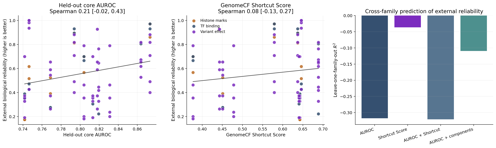

GenomeCF integrates experimentally grounded external assay tasks and asks whether counterfactual benchmark behavior predicts biological transfer reliability.
| external_family | model_id | model_label | official_auroc | official_auprc | official_ece | official_brier | worst_bin_auroc | gc_bin_auroc_gap | spearman_abs_effect | topk_enrichment | matched_negative_shift | external_biological_reliability | external_reliability_risk | task_config_pairs | family_label |
|---|---|---|---|---|---|---|---|---|---|---|---|---|---|---|---|
| TF binding | kmer_logistic_regression | 6-mer logistic regression | 0.823 | 0.787 | 0.124 | 0.185 | 0.786 | 0.094 | NaN | NaN | -0.004 | 0.449 | 0.588 | 2 | TF binding |
| TF binding | small_cnn | CNN | 0.761 | 0.736 | 0.139 | 0.217 | 0.695 | 0.100 | NaN | NaN | -0.118 | 0.276 | 0.385 | 2 | TF binding |
| TF binding | small_cnn_rc_aug | RC-aug CNN | 0.848 | 0.819 | 0.158 | 0.191 | 0.810 | 0.118 | NaN | NaN | -0.038 | 0.683 | 0.679 | 2 | TF binding |
| TF binding | dnabert2 | DNABERT-2 | 0.884 | 0.875 | 0.090 | 0.146 | 0.819 | 0.123 | NaN | NaN | -0.012 | 0.913 | 0.688 | 2 | TF binding |
| TF binding | caduceus_ph | Caduceus-Ph | 0.780 | 0.744 | 0.172 | 0.226 | 0.769 | 0.128 | NaN | NaN | -0.058 | 0.369 | 0.380 | 2 | TF binding |
| Histone marks | kmer_logistic_regression | 6-mer logistic regression | 0.625 | 0.638 | 0.268 | 0.321 | 0.553 | 0.124 | NaN | NaN | -0.029 | 0.567 | 0.480 | 2 | Histone marks |
| Histone marks | small_cnn | CNN | 0.608 | 0.596 | 0.027 | 0.249 | 0.556 | 0.161 | NaN | NaN | -0.034 | 0.458 | 0.684 | 2 | Histone marks |
| Histone marks | small_cnn_rc_aug | RC-aug CNN | 0.614 | 0.617 | 0.019 | 0.245 | 0.567 | 0.140 | NaN | NaN | -0.046 | 0.633 | 0.688 | 2 | Histone marks |
| Histone marks | dnabert2 | DNABERT-2 | 0.702 | 0.700 | 0.041 | 0.218 | 0.593 | 0.167 | NaN | NaN | -0.011 | 0.854 | 0.531 | 2 | Histone marks |
| Histone marks | caduceus_ph | Caduceus-Ph | 0.584 | 0.584 | 0.036 | 0.245 | 0.454 | 0.166 | NaN | NaN | 0.001 | 0.175 | 0.598 | 2 | Histone marks |
| Variant effect | kmer_logistic_regression | 6-mer logistic regression | 0.646 | 0.512 | 0.093 | 0.174 | 0.578 | 0.125 | 0.259 | 1.488 | NaN | 0.869 | 0.485 | 5 | Variant effect |
| Variant effect | small_cnn | CNN | 0.519 | 0.398 | 0.031 | 0.187 | 0.412 | 0.219 | 0.043 | 1.334 | NaN | 0.485 | 0.519 | 5 | Variant effect |
| Variant effect | small_cnn_rc_aug | RC-aug CNN | 0.511 | 0.365 | 0.029 | 0.187 | 0.470 | 0.108 | 0.033 | 0.967 | NaN | 0.398 | 0.622 | 5 | Variant effect |
| Variant effect | dnabert2 | DNABERT-2 | 0.557 | 0.403 | 0.035 | 0.187 | 0.463 | 0.158 | 0.090 | 1.342 | NaN | 0.660 | 0.519 | 5 | Variant effect |
| Variant effect | caduceus_ph | Caduceus-Ph | 0.497 | 0.359 | 0.029 | 0.187 | 0.415 | 0.102 | 0.025 | 0.807 | NaN | 0.389 | 0.694 | 5 | Variant effect |
| task_id | task_readable_name | tier | track | species | split_id | split_fold | model_id | model_readable_name | model_family | mode | calibration_method | intervention_id | seeds | auroc | auprc | accuracy | balanced_accuracy | mcc | f1 | ece | brier | train_count | val_count | test_count | positive_count | negative_count | mean_abs_delta | flip_rate | positive_prob_drop | calibration_shift | sequence_length_summary | rc_mean_abs_delta | rc_flip_rate | rc_positive_prob_drop | rc_calibration_shift | mono_mean_abs_delta | mono_flip_rate | mono_positive_prob_drop | mono_calibration_shift | dinuc_mean_abs_delta | dinuc_flip_rate | dinuc_positive_prob_drop | dinuc_calibration_shift | motif_mean_abs_delta | motif_flip_rate | motif_positive_prob_drop | motif_calibration_shift | gc_only_auroc | gc_only_explainability_ratio | mono_retention | dinuc_retention | shortcut_score | matched_auroc | matched_auprc | matched_ece | matched_brier | gc_overall_auroc | gc_overall_ece | gc_overall_brier | worst_bin_auroc | best_bin_auroc | gc_bin_auroc_gap | worst_bin_ece | gc_bin_ece_gap | task_label | external_family | model_label | condition_label | spearman_abs_effect | pearson_abs_effect | topk_precision | topk_enrichment | matched_negative_shift | matched_negative_abs_shift | best_bin_ece | embedding_dim | model_checkpoint | tokenizer_name | core_mean_auroc | core_mean_auprc | core_mean_ece | core_mean_brier | core_mean_rc_delta | core_mean_rc_flip | core_mean_mono_drop | core_mean_dinuc_drop | core_mean_shortcut_score | core_matched_negative_shift | core_worst_gc_bin_auroc | core_gc_bin_auroc_gap | core_worst_gc_bin_ece | external_biological_reliability | external_reliability_risk |
|---|---|---|---|---|---|---|---|---|---|---|---|---|---|---|---|---|---|---|---|---|---|---|---|---|---|---|---|---|---|---|---|---|---|---|---|---|---|---|---|---|---|---|---|---|---|---|---|---|---|---|---|---|---|---|---|---|---|---|---|---|---|---|---|---|---|---|---|---|---|---|---|---|---|---|---|---|---|---|---|---|---|---|---|---|---|---|---|---|---|---|---|---|---|
| gue_emp_h3k14ac | External histone mark (H3K14ac) | external | short_context | human | official | none | caduceus_ph | Caduceus-Ph | foundation_model | frozen | none | standard | 1 | 0.591 | 0.613 | 0.575 | 0.575 | 0.150 | 0.560 | 0.045 | 0.245 | 1000.000 | 200.000 | 400.000 | 200.000 | 200.000 | NaN | NaN | NaN | NaN | 500 | 0.010 | 0.098 | -0.001 | 0.012 | 0.010 | 0.117 | 0.000 | -0.023 | 0.006 | 0.077 | 0.003 | -0.028 | 0.001 | 0.013 | -0.001 | 0.003 | NaN | NaN | -0.000 | -0.003 | 0.367 | 0.597 | 0.662 | 0.073 | 0.244 | 0.591 | 0.045 | 0.245 | 0.430 | 0.587 | 0.157 | 0.125 | 0.118 | External histone mark (H3K14ac) | Histone marks | Caduceus-Ph | Standard | NaN | NaN | NaN | NaN | -0.006 | 0.006 | NaN | NaN | NaN | NaN | 0.742 | 0.730 | 0.040 | 0.202 | 0.035 | 0.097 | -0.053 | -0.012 | 0.642 | 0.068 | 0.624 | 0.108 | 0.087 | 0.175 | 0.607 |
| gue_emp_h3k14ac | External histone mark (H3K14ac) | external | short_context | human | official | none | dnabert2 | DNABERT-2 | foundation_model | frozen | none | standard | 1 | 0.755 | 0.756 | 0.682 | 0.682 | 0.366 | 0.691 | 0.037 | 0.202 | 1000.000 | 200.000 | 400.000 | 200.000 | 200.000 | NaN | NaN | NaN | NaN | 500 | 0.078 | 0.133 | 0.014 | 0.023 | 0.217 | 0.472 | -0.097 | 0.144 | 0.176 | 0.412 | -0.067 | 0.096 | 0.012 | 0.020 | -0.006 | 0.013 | NaN | NaN | 0.097 | 0.067 | 0.800 | 0.761 | 0.801 | 0.063 | 0.199 | 0.755 | 0.037 | 0.202 | 0.617 | 0.831 | 0.213 | 0.137 | 0.061 | External histone mark (H3K14ac) | Histone marks | DNABERT-2 | Standard | NaN | NaN | NaN | NaN | -0.006 | 0.006 | NaN | NaN | NaN | NaN | 0.794 | 0.790 | 0.029 | 0.179 | 0.081 | 0.135 | 0.007 | 0.001 | 0.637 | 0.013 | 0.730 | 0.091 | 0.044 | 0.812 | 0.556 |
| gue_emp_h3k14ac | External histone mark (H3K14ac) | external | short_context | human | official | none | dnabert2 | DNABERT-2 | foundation_model | frozen | temperature | standard | 1 | 0.762 | 0.800 | 0.694 | 0.697 | 0.390 | 0.717 | 0.064 | 0.199 | 10000.000 | 2000.000 | 3305.000 | 1896.000 | 1409.000 | NaN | NaN | NaN | NaN | 500 | 0.088 | 0.142 | 0.002 | -0.002 | 0.263 | 0.496 | -0.104 | 0.094 | 0.213 | 0.425 | -0.057 | 0.018 | 0.013 | 0.022 | -0.002 | -0.005 | NaN | NaN | 0.104 | 0.057 | 0.800 | NaN | NaN | NaN | NaN | 0.755 | 0.037 | 0.202 | 0.617 | 0.831 | 0.213 | 0.137 | 0.061 | External histone mark (H3K14ac) | Histone marks | DNABERT-2 | Temperature-scaled | NaN | NaN | NaN | NaN | NaN | NaN | NaN | NaN | NaN | NaN | 0.873 | 0.882 | 0.020 | 0.140 | 0.077 | 0.096 | -0.046 | 0.025 | 0.579 | 0.033 | 0.730 | 0.091 | 0.044 | 0.861 | 0.438 |
| gue_emp_h3k14ac | External histone mark (H3K14ac) | external | short_context | human | official | none | kmer_logistic_regression | 6-mer logistic regression | classical | frozen | none | standard | 1 | 0.665 | 0.678 | 0.615 | 0.615 | 0.230 | 0.624 | 0.237 | 0.294 | 1000.000 | 200.000 | 400.000 | 200.000 | 200.000 | NaN | NaN | NaN | NaN | 500 | 0.357 | 0.420 | 0.031 | 0.041 | 0.450 | 0.505 | 0.001 | 0.139 | 0.385 | 0.427 | 0.093 | 0.134 | 0.028 | 0.035 | -0.003 | -0.002 | NaN | NaN | -0.001 | -0.093 | 0.667 | 0.686 | 0.734 | 0.230 | 0.281 | 0.665 | 0.237 | 0.294 | 0.571 | 0.715 | 0.145 | 0.349 | 0.170 | External histone mark (H3K14ac) | Histone marks | 6-mer logistic regression | Standard | NaN | NaN | NaN | NaN | -0.021 | 0.021 | NaN | NaN | NaN | NaN | 0.746 | 0.813 | 0.235 | 0.262 | 0.339 | 0.349 | 0.087 | 0.119 | 0.646 | -0.007 | 0.700 | 0.083 | 0.213 | 0.517 | 0.456 |
| gue_emp_h3k14ac | External histone mark (H3K14ac) | external | short_context | human | official | none | small_cnn | CNN | cnn | full | none | standard | 1 | 0.621 | 0.619 | 0.500 | 0.500 | 0.000 | 0.667 | 0.033 | 0.249 | 1000.000 | 200.000 | 400.000 | 200.000 | 200.000 | NaN | NaN | NaN | NaN | 500 | 0.007 | 0.000 | 0.000 | -0.000 | 0.012 | 0.003 | 0.000 | 0.001 | 0.010 | 0.000 | 0.002 | -0.000 | 0.000 | 0.000 | -0.000 | 0.000 | NaN | NaN | -0.000 | -0.002 | 0.400 | 0.694 | 0.756 | 0.018 | 0.218 | 0.680 | 0.030 | 0.248 | 0.623 | 0.745 | 0.122 | 0.140 | 0.121 | External histone mark (H3K14ac) | Histone marks | CNN | Standard | NaN | NaN | NaN | NaN | -0.073 | 0.073 | NaN | NaN | NaN | NaN | 0.769 | 0.851 | 0.061 | 0.194 | 0.041 | 0.072 | 0.047 | 0.029 | 0.451 | 0.008 | 0.689 | 0.120 | 0.100 | 0.525 | 0.693 |
| gue_emp_h3k14ac | External histone mark (H3K14ac) | external | short_context | human | official | none | small_cnn_rc_aug | RC-aug CNN | cnn | full | none | standard | 1 | 0.634 | 0.638 | 0.588 | 0.588 | 0.203 | 0.448 | 0.023 | 0.239 | 1000.000 | 200.000 | 400.000 | 200.000 | 200.000 | NaN | NaN | NaN | NaN | 500 | 0.069 | 0.360 | 0.002 | 0.012 | 0.046 | 0.245 | 0.050 | 0.036 | 0.046 | 0.237 | 0.039 | 0.030 | 0.000 | 0.003 | -0.000 | -0.000 | NaN | NaN | -0.050 | -0.039 | 0.467 | 0.713 | 0.772 | 0.028 | 0.212 | 0.643 | 0.066 | 0.243 | 0.624 | 0.722 | 0.098 | 0.158 | 0.075 | External histone mark (H3K14ac) | Histone marks | RC-aug CNN | Standard | NaN | NaN | NaN | NaN | -0.079 | 0.079 | NaN | NaN | NaN | NaN | 0.804 | 0.859 | 0.052 | 0.177 | 0.039 | 0.069 | 0.087 | 0.048 | 0.377 | 0.024 | 0.718 | 0.118 | 0.076 | 0.700 | 0.744 |
| gue_emp_h3k4me3 | External histone mark (H3K4me3) | external | short_context | human | official | none | caduceus_ph | Caduceus-Ph | foundation_model | frozen | none | standard | 1 | 0.577 | 0.556 | 0.565 | 0.565 | 0.131 | 0.537 | 0.028 | 0.246 | 1000.000 | 200.000 | 400.000 | 200.000 | 200.000 | NaN | NaN | NaN | NaN | 500 | 0.033 | 0.265 | -0.000 | -0.007 | 0.013 | 0.113 | 0.001 | -0.015 | 0.009 | 0.077 | 0.004 | -0.013 | 0.002 | 0.030 | -0.001 | -0.004 | NaN | NaN | -0.001 | -0.004 | 0.467 | 0.570 | 0.592 | 0.037 | 0.246 | 0.577 | 0.028 | 0.246 | 0.478 | 0.653 | 0.175 | 0.047 | 0.040 | External histone mark (H3K4me3) | Histone marks | Caduceus-Ph | Standard | NaN | NaN | NaN | NaN | 0.008 | 0.008 | NaN | NaN | NaN | NaN | 0.742 | 0.730 | 0.040 | 0.202 | 0.035 | 0.097 | -0.053 | -0.012 | 0.642 | 0.068 | 0.624 | 0.108 | 0.087 | 0.175 | 0.589 |
| gue_emp_h3k4me3 | External histone mark (H3K4me3) | external | short_context | human | official | none | dnabert2 | DNABERT-2 | foundation_model | frozen | none | standard | 1 | 0.648 | 0.643 | 0.620 | 0.620 | 0.240 | 0.624 | 0.046 | 0.234 | 1000.000 | 200.000 | 400.000 | 200.000 | 200.000 | NaN | NaN | NaN | NaN | 500 | 0.079 | 0.240 | -0.002 | 0.013 | 0.119 | 0.417 | -0.045 | 0.036 | 0.112 | 0.435 | -0.024 | 0.049 | 0.007 | 0.018 | -0.002 | 0.003 | NaN | NaN | 0.045 | 0.024 | 0.867 | 0.663 | 0.687 | 0.033 | 0.230 | 0.648 | 0.046 | 0.234 | 0.569 | 0.691 | 0.121 | 0.139 | 0.096 | External histone mark (H3K4me3) | Histone marks | DNABERT-2 | Standard | NaN | NaN | NaN | NaN | -0.015 | 0.015 | NaN | NaN | NaN | NaN | 0.794 | 0.790 | 0.029 | 0.179 | 0.081 | 0.135 | 0.007 | 0.001 | 0.637 | 0.013 | 0.730 | 0.091 | 0.044 | 0.896 | 0.507 |
| gue_emp_h3k4me3 | External histone mark (H3K4me3) | external | short_context | human | official | none | dnabert2 | DNABERT-2 | foundation_model | frozen | temperature | standard | 1 | 0.666 | 0.682 | 0.615 | 0.616 | 0.231 | 0.627 | 0.028 | 0.229 | 10000.000 | 2000.000 | 3680.000 | 1949.000 | 1731.000 | NaN | NaN | NaN | NaN | 500 | 0.074 | 0.223 | -0.001 | -0.003 | 0.135 | 0.476 | -0.032 | 0.029 | 0.121 | 0.405 | -0.026 | 0.013 | 0.008 | 0.025 | 0.000 | -0.001 | NaN | NaN | 0.032 | 0.026 | 0.767 | NaN | NaN | NaN | NaN | 0.648 | 0.046 | 0.234 | 0.569 | 0.691 | 0.121 | 0.139 | 0.096 | External histone mark (H3K4me3) | Histone marks | DNABERT-2 | Temperature-scaled | NaN | NaN | NaN | NaN | NaN | NaN | NaN | NaN | NaN | NaN | 0.873 | 0.882 | 0.020 | 0.140 | 0.077 | 0.096 | -0.046 | 0.025 | 0.579 | 0.033 | 0.730 | 0.091 | 0.044 | 0.972 | 0.604 |
| gue_emp_h3k4me3 | External histone mark (H3K4me3) | external | short_context | human | official | none | kmer_logistic_regression | 6-mer logistic regression | classical | frozen | none | standard | 1 | 0.586 | 0.598 | 0.562 | 0.562 | 0.125 | 0.580 | 0.299 | 0.348 | 1000.000 | 200.000 | 400.000 | 200.000 | 200.000 | NaN | NaN | NaN | NaN | 500 | 0.372 | 0.405 | -0.006 | 0.034 | 0.431 | 0.515 | 0.049 | 0.014 | 0.406 | 0.463 | 0.137 | 0.088 | 0.026 | 0.035 | 0.002 | 0.010 | NaN | NaN | -0.049 | -0.137 | 0.600 | 0.622 | 0.642 | 0.247 | 0.308 | 0.586 | 0.299 | 0.348 | 0.536 | 0.639 | 0.103 | 0.371 | 0.116 | External histone mark (H3K4me3) | Histone marks | 6-mer logistic regression | Standard | NaN | NaN | NaN | NaN | -0.036 | 0.036 | NaN | NaN | NaN | NaN | 0.746 | 0.813 | 0.235 | 0.262 | 0.339 | 0.349 | 0.087 | 0.119 | 0.646 | -0.007 | 0.700 | 0.083 | 0.213 | 0.617 | 0.504 |
| gue_emp_h3k4me3 | External histone mark (H3K4me3) | external | short_context | human | official | none | small_cnn | CNN | cnn | full | none | standard | 1 | 0.594 | 0.574 | 0.500 | 0.500 | 0.000 | 0.667 | 0.021 | 0.249 | 1000.000 | 200.000 | 400.000 | 200.000 | 200.000 | NaN | NaN | NaN | NaN | 500 | 0.006 | 0.000 | 0.000 | -0.000 | 0.007 | 0.000 | 0.002 | -0.001 | 0.006 | 0.000 | 0.002 | -0.001 | 0.000 | 0.000 | -0.000 | 0.000 | NaN | NaN | -0.002 | -0.002 | 0.350 | 0.589 | 0.606 | 0.036 | 0.245 | 0.606 | 0.032 | 0.247 | 0.489 | 0.688 | 0.200 | 0.126 | 0.097 | External histone mark (H3K4me3) | Histone marks | CNN | Standard | NaN | NaN | NaN | NaN | 0.006 | 0.006 | NaN | NaN | NaN | NaN | 0.769 | 0.851 | 0.061 | 0.194 | 0.041 | 0.072 | 0.047 | 0.029 | 0.451 | 0.008 | 0.689 | 0.120 | 0.100 | 0.392 | 0.676 |
| gue_emp_h3k4me3 | External histone mark (H3K4me3) | external | short_context | human | official | none | small_cnn_rc_aug | RC-aug CNN | cnn | full | none | standard | 1 | 0.595 | 0.595 | 0.500 | 0.500 | 0.000 | 0.667 | 0.015 | 0.250 | 1000.000 | 200.000 | 400.000 | 200.000 | 200.000 | NaN | NaN | NaN | NaN | 500 | 0.001 | 0.000 | 0.000 | 0.000 | 0.001 | 0.000 | 0.001 | -0.001 | 0.001 | 0.000 | 0.001 | -0.001 | 0.000 | 0.000 | -0.000 | 0.000 | NaN | NaN | -0.001 | -0.001 | 0.450 | 0.607 | 0.632 | 0.060 | 0.244 | 0.601 | 0.010 | 0.250 | 0.510 | 0.692 | 0.182 | 0.082 | 0.061 | External histone mark (H3K4me3) | Histone marks | RC-aug CNN | Standard | NaN | NaN | NaN | NaN | -0.012 | 0.012 | NaN | NaN | NaN | NaN | 0.804 | 0.859 | 0.052 | 0.177 | 0.039 | 0.069 | 0.087 | 0.048 | 0.377 | 0.024 | 0.718 | 0.118 | 0.076 | 0.567 | 0.631 |
| gue_human_tf_0 | External TF binding (human_tf_0) | external | short_context | human | official | none | caduceus_ph | Caduceus-Ph | foundation_model | frozen | none | matched_negative_retraining | 1 | 0.716 | 0.674 | 0.560 | 0.560 | 0.253 | 0.694 | 0.121 | 0.239 | 882.000 | 200.000 | 400.000 | 200.000 | 200.000 | NaN | NaN | NaN | NaN | 101 | 0.030 | 0.035 | 0.001 | -0.004 | 0.034 | 0.060 | -0.009 | -0.019 | 0.014 | 0.062 | 0.001 | -0.019 | 0.001 | 0.000 | 0.001 | 0.009 | NaN | NaN | 0.009 | -0.001 | 0.378 | 0.810 | 0.818 | 0.138 | 0.180 | 0.758 | 0.155 | 0.232 | 0.721 | 0.872 | 0.150 | 0.244 | 0.170 | External TF binding (human_tf_0) | TF binding | Caduceus-Ph | Matched-negative head | NaN | NaN | NaN | NaN | -0.094 | 0.094 | NaN | NaN | NaN | NaN | 0.819 | 0.833 | 0.115 | 0.190 | 0.042 | 0.130 | -0.077 | -0.012 | 0.689 | 0.059 | 0.624 | 0.108 | 0.087 | 0.222 | 0.556 |
| gue_human_tf_0 | External TF binding (human_tf_0) | external | short_context | human | official | none | caduceus_ph | Caduceus-Ph | foundation_model | frozen | none | standard | 1 | 0.758 | 0.705 | 0.693 | 0.692 | 0.398 | 0.727 | 0.155 | 0.232 | 1000.000 | 200.000 | 400.000 | 200.000 | 200.000 | NaN | NaN | NaN | NaN | 101 | 0.029 | 0.250 | 0.000 | 0.018 | 0.038 | 0.335 | -0.011 | -0.111 | 0.016 | 0.095 | -0.000 | -0.030 | 0.001 | 0.005 | 0.001 | 0.000 | NaN | NaN | 0.011 | 0.000 | 0.478 | 0.823 | 0.834 | 0.150 | 0.180 | 0.758 | 0.155 | 0.232 | 0.721 | 0.872 | 0.150 | 0.244 | 0.170 | External TF binding (human_tf_0) | TF binding | Caduceus-Ph | Standard | NaN | NaN | NaN | NaN | -0.064 | 0.064 | NaN | NaN | NaN | NaN | 0.742 | 0.730 | 0.040 | 0.202 | 0.035 | 0.097 | -0.053 | -0.012 | 0.642 | 0.068 | 0.624 | 0.108 | 0.087 | 0.389 | 0.438 |
| gue_human_tf_0 | External TF binding (human_tf_0) | external | short_context | human | official | none | caduceus_ph | Caduceus-Ph | foundation_model | frozen | temperature | standard | 1 | 0.758 | 0.705 | 0.693 | 0.692 | 0.398 | 0.727 | 0.130 | 0.222 | 1000.000 | 200.000 | 400.000 | 200.000 | 200.000 | NaN | NaN | NaN | NaN | 101 | 0.049 | 0.250 | 0.000 | 0.017 | 0.064 | 0.335 | -0.019 | -0.053 | 0.026 | 0.095 | -0.000 | -0.027 | 0.002 | 0.005 | 0.002 | 0.000 | NaN | NaN | 0.019 | 0.000 | 0.656 | 0.784 | 0.774 | 0.215 | 0.215 | 0.758 | 0.155 | 0.232 | 0.721 | 0.872 | 0.150 | 0.244 | 0.170 | External TF binding (human_tf_0) | TF binding | Caduceus-Ph | Temperature-scaled | NaN | NaN | NaN | NaN | -0.026 | 0.026 | NaN | NaN | NaN | NaN | 0.813 | 0.828 | 0.034 | 0.174 | 0.040 | 0.047 | -0.090 | -0.011 | 0.640 | 0.069 | 0.624 | 0.108 | 0.087 | 0.306 | 0.500 |
| gue_human_tf_0 | External TF binding (human_tf_0) | external | short_context | human | official | none | dnabert2 | DNABERT-2 | foundation_model | frozen | none | matched_negative_retraining | 1 | 0.824 | 0.817 | 0.735 | 0.735 | 0.493 | 0.770 | 0.093 | 0.179 | 882.000 | 200.000 | 400.000 | 200.000 | 200.000 | NaN | NaN | NaN | NaN | 101 | 0.111 | 0.160 | 0.001 | -0.000 | 0.241 | 0.383 | -0.014 | 0.136 | 0.137 | 0.230 | -0.001 | 0.022 | 0.011 | 0.022 | 0.005 | -0.005 | NaN | NaN | 0.014 | 0.001 | 0.733 | 0.880 | 0.894 | 0.045 | 0.135 | 0.846 | 0.061 | 0.165 | 0.761 | 0.936 | 0.175 | 0.147 | 0.031 | External TF binding (human_tf_0) | TF binding | DNABERT-2 | Matched-negative head | NaN | NaN | NaN | NaN | -0.056 | 0.056 | NaN | NaN | NaN | NaN | 0.864 | 0.875 | 0.093 | 0.158 | 0.084 | 0.146 | -0.080 | 0.013 | 0.689 | 0.014 | 0.730 | 0.091 | 0.044 | 0.806 | 0.531 |
| gue_human_tf_0 | External TF binding (human_tf_0) | external | short_context | human | official | none | dnabert2 | DNABERT-2 | foundation_model | frozen | none | standard | 1 | 0.846 | 0.844 | 0.743 | 0.742 | 0.494 | 0.764 | 0.061 | 0.165 | 1000.000 | 200.000 | 400.000 | 200.000 | 200.000 | NaN | NaN | NaN | NaN | 101 | 0.110 | 0.168 | 0.000 | -0.007 | 0.250 | 0.432 | 0.006 | 0.121 | 0.140 | 0.225 | 0.002 | 0.001 | 0.012 | 0.025 | 0.007 | -0.004 | NaN | NaN | -0.006 | -0.002 | 0.544 | 0.883 | 0.898 | 0.041 | 0.134 | 0.846 | 0.061 | 0.165 | 0.761 | 0.936 | 0.175 | 0.147 | 0.031 | External TF binding (human_tf_0) | TF binding | DNABERT-2 | Standard | NaN | NaN | NaN | NaN | -0.038 | 0.038 | NaN | NaN | NaN | NaN | 0.794 | 0.790 | 0.029 | 0.179 | 0.081 | 0.135 | 0.007 | 0.001 | 0.637 | 0.013 | 0.730 | 0.091 | 0.044 | 0.931 | 0.679 |
| gue_human_tf_0 | External TF binding (human_tf_0) | external | short_context | human | official | none | dnabert2 | DNABERT-2 | foundation_model | frozen | temperature | standard | 1 | 0.846 | 0.844 | 0.743 | 0.742 | 0.494 | 0.764 | 0.067 | 0.164 | 1000.000 | 200.000 | 400.000 | 200.000 | 200.000 | NaN | NaN | NaN | NaN | 101 | 0.119 | 0.168 | -0.000 | -0.018 | 0.274 | 0.432 | 0.007 | 0.142 | 0.152 | 0.225 | 0.002 | -0.006 | 0.013 | 0.025 | 0.008 | -0.006 | NaN | NaN | -0.007 | -0.002 | 0.589 | 0.883 | 0.898 | 0.037 | 0.133 | 0.846 | 0.061 | 0.165 | 0.761 | 0.936 | 0.175 | 0.147 | 0.031 | External TF binding (human_tf_0) | TF binding | DNABERT-2 | Temperature-scaled | NaN | NaN | NaN | NaN | -0.038 | 0.038 | NaN | NaN | NaN | NaN | 0.873 | 0.882 | 0.020 | 0.140 | 0.077 | 0.096 | -0.046 | 0.025 | 0.579 | 0.033 | 0.730 | 0.091 | 0.044 | 0.931 | 0.679 |
| gue_human_tf_0 | External TF binding (human_tf_0) | external | short_context | human | official | none | kmer_logistic_regression | 6-mer logistic regression | classical | frozen | none | standard | 1 | 0.782 | 0.742 | 0.718 | 0.718 | 0.436 | 0.725 | 0.151 | 0.213 | 1000.000 | 200.000 | 400.000 | 200.000 | 200.000 | NaN | NaN | NaN | NaN | 101 | 0.250 | 0.263 | -0.041 | -0.011 | 0.433 | 0.512 | 0.054 | 0.166 | 0.268 | 0.297 | -0.002 | 0.024 | 0.016 | 0.018 | 0.011 | 0.013 | NaN | NaN | -0.054 | 0.002 | 0.822 | 0.804 | 0.840 | 0.156 | 0.204 | 0.782 | 0.151 | 0.213 | 0.742 | 0.859 | 0.117 | 0.217 | 0.093 | External TF binding (human_tf_0) | TF binding | 6-mer logistic regression | Standard | NaN | NaN | NaN | NaN | -0.022 | 0.022 | NaN | NaN | NaN | NaN | 0.746 | 0.813 | 0.235 | 0.262 | 0.339 | 0.349 | 0.087 | 0.119 | 0.646 | -0.007 | 0.700 | 0.083 | 0.213 | 0.472 | 0.531 |
| gue_human_tf_0 | External TF binding (human_tf_0) | external | short_context | human | official | none | small_cnn | CNN | cnn | full | none | standard | 1 | 0.728 | 0.689 | 0.603 | 0.603 | 0.265 | 0.418 | 0.143 | 0.229 | 1000.000 | 200.000 | 400.000 | 200.000 | 200.000 | NaN | NaN | NaN | NaN | 101 | 0.079 | 0.230 | -0.009 | -0.011 | 0.094 | 0.315 | -0.013 | -0.071 | 0.045 | 0.120 | 0.013 | -0.010 | 0.005 | 0.022 | 0.005 | 0.011 | NaN | NaN | 0.013 | -0.013 | 0.489 | 0.873 | 0.880 | 0.127 | 0.159 | 0.703 | 0.141 | 0.241 | 0.680 | 0.779 | 0.099 | 0.229 | 0.130 | External TF binding (human_tf_0) | TF binding | CNN | Standard | NaN | NaN | NaN | NaN | -0.145 | 0.145 | NaN | NaN | NaN | NaN | 0.769 | 0.851 | 0.061 | 0.194 | 0.041 | 0.072 | 0.047 | 0.029 | 0.451 | 0.008 | 0.689 | 0.120 | 0.100 | 0.278 | 0.469 |
| gue_human_tf_0 | External TF binding (human_tf_0) | external | short_context | human | official | none | small_cnn_rc_aug | RC-aug CNN | cnn | full | none | standard | 1 | 0.810 | 0.762 | 0.627 | 0.627 | 0.370 | 0.727 | 0.184 | 0.226 | 1000.000 | 200.000 | 400.000 | 200.000 | 200.000 | NaN | NaN | NaN | NaN | 101 | 0.059 | 0.055 | -0.000 | 0.001 | 0.128 | 0.158 | 0.017 | 0.051 | 0.062 | 0.083 | 0.019 | -0.009 | 0.005 | 0.013 | 0.002 | -0.005 | NaN | NaN | -0.017 | -0.019 | 0.311 | 0.873 | 0.886 | 0.033 | 0.137 | 0.823 | 0.065 | 0.171 | 0.753 | 0.913 | 0.159 | 0.132 | 0.068 | External TF binding (human_tf_0) | TF binding | RC-aug CNN | Standard | NaN | NaN | NaN | NaN | -0.063 | 0.063 | NaN | NaN | NaN | NaN | 0.804 | 0.859 | 0.052 | 0.177 | 0.039 | 0.069 | 0.087 | 0.048 | 0.377 | 0.024 | 0.718 | 0.118 | 0.076 | 0.667 | 0.617 |
| gue_human_tf_1 | External TF binding (human_tf_1) | external | short_context | human | official | none | caduceus_ph | Caduceus-Ph | foundation_model | frozen | none | standard | 1 | 0.802 | 0.784 | 0.740 | 0.740 | 0.489 | 0.763 | 0.188 | 0.220 | 1000.000 | 200.000 | 400.000 | 200.000 | 200.000 | NaN | NaN | NaN | NaN | 101 | 0.046 | 0.250 | 0.009 | -0.043 | 0.046 | 0.300 | -0.007 | -0.119 | 0.018 | 0.107 | 0.000 | -0.019 | 0.001 | 0.010 | 0.001 | -0.004 | NaN | NaN | 0.007 | -0.000 | 0.633 | 0.853 | 0.870 | 0.186 | 0.172 | 0.802 | 0.188 | 0.220 | 0.817 | 0.922 | 0.105 | 0.299 | 0.141 | External TF binding (human_tf_1) | TF binding | Caduceus-Ph | Standard | NaN | NaN | NaN | NaN | -0.051 | 0.051 | NaN | NaN | NaN | NaN | 0.742 | 0.730 | 0.040 | 0.202 | 0.035 | 0.097 | -0.053 | -0.012 | 0.642 | 0.068 | 0.624 | 0.108 | 0.087 | 0.350 | 0.322 |
| gue_human_tf_1 | External TF binding (human_tf_1) | external | short_context | human | official | none | dnabert2 | DNABERT-2 | foundation_model | frozen | none | standard | 1 | 0.923 | 0.906 | 0.855 | 0.855 | 0.717 | 0.864 | 0.119 | 0.126 | 1000.000 | 200.000 | 400.000 | 200.000 | 200.000 | NaN | NaN | NaN | NaN | 101 | 0.124 | 0.135 | 0.008 | -0.031 | 0.267 | 0.450 | 0.070 | 0.072 | 0.145 | 0.205 | 0.014 | -0.052 | 0.005 | 0.003 | 0.005 | 0.000 | NaN | NaN | -0.070 | -0.014 | 0.600 | 0.909 | 0.933 | 0.057 | 0.122 | 0.923 | 0.119 | 0.126 | 0.877 | 0.947 | 0.070 | 0.189 | 0.058 | External TF binding (human_tf_1) | TF binding | DNABERT-2 | Standard | NaN | NaN | NaN | NaN | 0.014 | 0.014 | NaN | NaN | NaN | NaN | 0.794 | 0.790 | 0.029 | 0.179 | 0.081 | 0.135 | 0.007 | 0.001 | 0.637 | 0.013 | 0.730 | 0.091 | 0.044 | 0.896 | 0.696 |
| gue_human_tf_1 | External TF binding (human_tf_1) | external | short_context | human | official | none | dnabert2 | DNABERT-2 | foundation_model | frozen | temperature | standard | 1 | 0.924 | 0.921 | 0.834 | 0.834 | 0.682 | 0.849 | 0.079 | 0.120 | 10000.000 | 1000.000 | 1000.000 | 500.000 | 500.000 | NaN | NaN | NaN | NaN | 101 | 0.092 | 0.091 | 0.004 | 0.000 | 0.303 | 0.409 | 0.050 | 0.169 | 0.137 | 0.167 | 0.038 | -0.016 | 0.008 | 0.010 | 0.005 | 0.002 | NaN | NaN | -0.050 | -0.038 | 0.533 | NaN | NaN | NaN | NaN | 0.923 | 0.119 | 0.126 | 0.877 | 0.947 | 0.070 | 0.189 | 0.058 | External TF binding (human_tf_1) | TF binding | DNABERT-2 | Temperature-scaled | NaN | NaN | NaN | NaN | NaN | NaN | NaN | NaN | NaN | NaN | 0.873 | 0.882 | 0.020 | 0.140 | 0.077 | 0.096 | -0.046 | 0.025 | 0.579 | 0.033 | 0.730 | 0.091 | 0.044 | 0.972 | 0.833 |
| gue_human_tf_1 | External TF binding (human_tf_1) | external | short_context | human | official | none | kmer_logistic_regression | 6-mer logistic regression | classical | frozen | none | standard | 1 | 0.863 | 0.832 | 0.777 | 0.777 | 0.557 | 0.787 | 0.097 | 0.157 | 1000.000 | 200.000 | 400.000 | 200.000 | 200.000 | NaN | NaN | NaN | NaN | 101 | 0.224 | 0.268 | 0.007 | -0.001 | 0.416 | 0.482 | 0.147 | 0.205 | 0.261 | 0.282 | 0.074 | 0.055 | 0.007 | 0.007 | 0.004 | -0.000 | NaN | NaN | -0.147 | -0.074 | 0.633 | 0.849 | 0.886 | 0.119 | 0.169 | 0.863 | 0.097 | 0.157 | 0.831 | 0.903 | 0.071 | 0.165 | 0.084 | External TF binding (human_tf_1) | TF binding | 6-mer logistic regression | Standard | NaN | NaN | NaN | NaN | 0.014 | 0.014 | NaN | NaN | NaN | NaN | 0.746 | 0.813 | 0.235 | 0.262 | 0.339 | 0.349 | 0.087 | 0.119 | 0.646 | -0.007 | 0.700 | 0.083 | 0.213 | 0.425 | 0.644 |
| gue_human_tf_1 | External TF binding (human_tf_1) | external | short_context | human | official | none | small_cnn | CNN | cnn | full | none | standard | 1 | 0.794 | 0.783 | 0.685 | 0.685 | 0.404 | 0.738 | 0.136 | 0.205 | 1000.000 | 200.000 | 400.000 | 200.000 | 200.000 | NaN | NaN | NaN | NaN | 101 | 0.110 | 0.340 | 0.014 | -0.002 | 0.103 | 0.307 | 0.028 | -0.054 | 0.062 | 0.172 | 0.010 | -0.032 | 0.001 | 0.000 | 0.001 | -0.002 | NaN | NaN | -0.028 | -0.010 | 0.733 | 0.885 | 0.898 | 0.072 | 0.132 | 0.727 | 0.132 | 0.248 | 0.711 | 0.812 | 0.102 | 0.180 | 0.117 | External TF binding (human_tf_1) | TF binding | CNN | Standard | NaN | NaN | NaN | NaN | -0.091 | 0.091 | NaN | NaN | NaN | NaN | 0.769 | 0.851 | 0.061 | 0.194 | 0.041 | 0.072 | 0.047 | 0.029 | 0.451 | 0.008 | 0.689 | 0.120 | 0.100 | 0.275 | 0.300 |
| gue_human_tf_1 | External TF binding (human_tf_1) | external | short_context | human | official | none | small_cnn_rc_aug | RC-aug CNN | cnn | full | none | standard | 1 | 0.886 | 0.875 | 0.770 | 0.770 | 0.566 | 0.800 | 0.132 | 0.155 | 1000.000 | 200.000 | 400.000 | 200.000 | 200.000 | NaN | NaN | NaN | NaN | 101 | 0.040 | 0.048 | 0.002 | -0.009 | 0.223 | 0.390 | 0.051 | 0.053 | 0.090 | 0.107 | 0.023 | -0.023 | 0.004 | 0.003 | 0.004 | -0.005 | NaN | NaN | -0.051 | -0.023 | 0.367 | 0.899 | 0.918 | 0.061 | 0.125 | 0.890 | 0.125 | 0.148 | 0.868 | 0.944 | 0.076 | 0.159 | 0.045 | External TF binding (human_tf_1) | TF binding | RC-aug CNN | Standard | NaN | NaN | NaN | NaN | -0.012 | 0.012 | NaN | NaN | NaN | NaN | 0.804 | 0.859 | 0.052 | 0.177 | 0.039 | 0.069 | 0.087 | 0.048 | 0.377 | 0.024 | 0.718 | 0.118 | 0.076 | 0.700 | 0.741 |
| mpra_bcl11a_enhancer | mpra_bcl11a_enhancer | external | variant_effect | human | official | none | caduceus_ph | Caduceus-Ph | foundation_model | frozen | none | matched_negative_retraining | 1 | 0.583 | 0.090 | 0.748 | 0.463 | -0.050 | 0.072 | 0.422 | 0.250 | 254.000 | 317.000 | 306.000 | 24.000 | 282.000 | NaN | NaN | NaN | NaN | 600 | 0.001 | 0.807 | -0.001 | 0.001 | 0.001 | 0.807 | -0.001 | 0.001 | 0.000 | 0.193 | 0.000 | -0.000 | 0.000 | 0.320 | -0.000 | 0.000 | NaN | NaN | 0.001 | -0.000 | 0.473 | NaN | NaN | NaN | NaN | 0.583 | 0.422 | 0.250 | 0.328 | 0.721 | 0.393 | 0.429 | 0.011 | MPRA variant effect (BCL11A enhancer) | Variant effect | Caduceus-Ph | Matched-negative head | 0.021 | 0.034 | 0.032 | 0.411 | NaN | NaN | 0.418 | 256.000 | kuleshov-group/caduceus-ph_seqlen-1k_d_model-256_n_layer-4_lr-8e-3 | kuleshov-group/caduceus-ph_seqlen-1k_d_model-256_n_layer-4_lr-8e-3 | 0.819 | 0.833 | 0.115 | 0.190 | 0.042 | 0.130 | -0.077 | -0.012 | 0.689 | 0.059 | 0.624 | 0.108 | 0.087 | 0.645 | 0.386 |
| mpra_bcl11a_enhancer | mpra_bcl11a_enhancer | external | variant_effect | human | official | none | caduceus_ph | Caduceus-Ph | foundation_model | frozen | none | standard | 1 | 0.431 | 0.074 | 0.922 | 0.500 | 0.000 | 0.000 | 0.051 | 0.075 | 979.000 | 317.000 | 306.000 | 24.000 | 282.000 | NaN | NaN | NaN | NaN | 600 | 0.002 | 0.000 | -0.002 | 0.002 | 0.004 | 0.000 | 0.004 | -0.003 | 0.003 | 0.000 | 0.001 | -0.001 | 0.000 | 0.000 | 0.000 | -0.000 | NaN | NaN | -0.004 | -0.001 | 0.282 | NaN | NaN | NaN | NaN | 0.431 | 0.051 | 0.075 | 0.323 | 0.477 | 0.154 | 0.059 | 0.012 | MPRA variant effect (BCL11A enhancer) | Variant effect | Caduceus-Ph | Standard | 0.017 | -0.044 | 0.032 | 0.411 | NaN | NaN | 0.048 | 256.000 | kuleshov-group/caduceus-ph_seqlen-1k_d_model-256_n_layer-4_lr-8e-3 | kuleshov-group/caduceus-ph_seqlen-1k_d_model-256_n_layer-4_lr-8e-3 | 0.742 | 0.730 | 0.040 | 0.202 | 0.035 | 0.097 | -0.053 | -0.012 | 0.642 | 0.068 | 0.624 | 0.108 | 0.087 | 0.355 | 0.597 |
| mpra_bcl11a_enhancer | mpra_bcl11a_enhancer | external | variant_effect | human | official | none | caduceus_ph | Caduceus-Ph | foundation_model | frozen | temperature | standard | 1 | 0.431 | 0.074 | 0.922 | 0.500 | 0.000 | 0.000 | 0.042 | 0.074 | 979.000 | 317.000 | 306.000 | 24.000 | 282.000 | NaN | NaN | NaN | NaN | 600 | 0.002 | 0.000 | -0.002 | 0.002 | 0.004 | 0.000 | 0.004 | -0.003 | 0.003 | 0.000 | 0.001 | -0.001 | 0.000 | 0.000 | 0.000 | -0.000 | NaN | NaN | -0.004 | -0.001 | 0.318 | NaN | NaN | NaN | NaN | 0.431 | 0.042 | 0.074 | 0.323 | 0.477 | 0.154 | 0.049 | 0.012 | MPRA variant effect (BCL11A enhancer) | Variant effect | Caduceus-Ph | Temperature-scaled | 0.017 | -0.044 | 0.032 | 0.411 | NaN | NaN | 0.038 | 256.000 | kuleshov-group/caduceus-ph_seqlen-1k_d_model-256_n_layer-4_lr-8e-3 | kuleshov-group/caduceus-ph_seqlen-1k_d_model-256_n_layer-4_lr-8e-3 | 0.813 | 0.828 | 0.034 | 0.174 | 0.040 | 0.047 | -0.090 | -0.011 | 0.640 | 0.069 | 0.624 | 0.108 | 0.087 | 0.355 | 0.631 |
| mpra_bcl11a_enhancer | mpra_bcl11a_enhancer | external | variant_effect | human | official | none | dnabert2 | DNABERT-2 | foundation_model | frozen | none | matched_negative_retraining | 1 | 0.507 | 0.083 | 0.255 | 0.539 | 0.052 | 0.156 | 0.423 | 0.251 | 254.000 | 317.000 | 306.000 | 24.000 | 282.000 | NaN | NaN | NaN | NaN | 600 | 0.003 | 0.196 | -0.002 | 0.002 | 0.025 | 0.196 | -0.025 | 0.025 | 0.008 | 0.356 | -0.004 | 0.005 | 0.001 | 0.219 | 0.001 | -0.001 | NaN | NaN | 0.025 | 0.004 | 0.673 | NaN | NaN | NaN | NaN | 0.507 | 0.423 | 0.251 | 0.489 | 0.526 | 0.037 | 0.430 | 0.011 | MPRA variant effect (BCL11A enhancer) | Variant effect | DNABERT-2 | Matched-negative head | -0.077 | -0.001 | 0.065 | 0.823 | NaN | NaN | 0.419 | 768.000 | external\dnabert2_local | external\dnabert2_local | 0.864 | 0.875 | 0.093 | 0.158 | 0.084 | 0.146 | -0.080 | 0.013 | 0.689 | 0.014 | 0.730 | 0.091 | 0.044 | 0.618 | 0.477 |
| mpra_bcl11a_enhancer | mpra_bcl11a_enhancer | external | variant_effect | human | official | none | dnabert2 | DNABERT-2 | foundation_model | frozen | none | standard | 1 | 0.540 | 0.125 | 0.922 | 0.500 | 0.000 | 0.000 | 0.052 | 0.075 | 979.000 | 317.000 | 306.000 | 24.000 | 282.000 | NaN | NaN | NaN | NaN | 600 | 0.005 | 0.000 | -0.005 | 0.005 | 0.031 | 0.000 | -0.031 | 0.031 | 0.007 | 0.000 | -0.005 | 0.005 | 0.001 | 0.000 | 0.000 | 0.000 | NaN | NaN | 0.031 | 0.005 | 0.718 | NaN | NaN | NaN | NaN | 0.540 | 0.052 | 0.075 | 0.340 | 0.615 | 0.275 | 0.060 | 0.012 | MPRA variant effect (BCL11A enhancer) | Variant effect | DNABERT-2 | Standard | 0.007 | 0.046 | 0.097 | 1.234 | NaN | NaN | 0.048 | 768.000 | external\dnabert2_local | external\dnabert2_local | 0.794 | 0.790 | 0.029 | 0.179 | 0.081 | 0.135 | 0.007 | 0.001 | 0.637 | 0.013 | 0.730 | 0.091 | 0.044 | 0.709 | 0.403 |
| mpra_bcl11a_enhancer | mpra_bcl11a_enhancer | external | variant_effect | human | official | none | dnabert2 | DNABERT-2 | foundation_model | frozen | temperature | standard | 1 | 0.540 | 0.125 | 0.922 | 0.500 | 0.000 | 0.000 | 0.041 | 0.074 | 979.000 | 317.000 | 306.000 | 24.000 | 282.000 | NaN | NaN | NaN | NaN | 600 | 0.005 | 0.000 | -0.005 | 0.005 | 0.030 | 0.000 | -0.030 | 0.030 | 0.007 | 0.000 | -0.005 | 0.005 | 0.001 | 0.000 | 0.000 | 0.000 | NaN | NaN | 0.030 | 0.005 | 0.645 | NaN | NaN | NaN | NaN | 0.540 | 0.041 | 0.074 | 0.340 | 0.615 | 0.275 | 0.050 | 0.012 | MPRA variant effect (BCL11A enhancer) | Variant effect | DNABERT-2 | Temperature-scaled | 0.007 | 0.046 | 0.097 | 1.234 | NaN | NaN | 0.038 | 768.000 | external\dnabert2_local | external\dnabert2_local | 0.873 | 0.882 | 0.020 | 0.140 | 0.077 | 0.096 | -0.046 | 0.025 | 0.579 | 0.033 | 0.730 | 0.091 | 0.044 | 0.709 | 0.528 |
| mpra_bcl11a_enhancer | mpra_bcl11a_enhancer | external | variant_effect | human | official | none | kmer_logistic_regression | 6-mer logistic regression | classical | frozen | none | standard | 1 | 0.463 | 0.080 | 0.899 | 0.507 | 0.021 | 0.061 | 0.061 | 0.093 | 979.000 | 317.000 | 306.000 | 24.000 | 282.000 | NaN | NaN | NaN | NaN | 600 | 0.135 | 0.029 | 0.121 | 0.017 | 0.134 | 0.029 | 0.121 | 0.018 | 0.135 | 0.029 | 0.121 | 0.017 | 0.073 | 0.020 | 0.060 | -0.008 | NaN | NaN | -0.121 | -0.121 | 0.527 | NaN | NaN | NaN | NaN | 0.463 | 0.061 | 0.093 | 0.331 | 0.526 | 0.195 | 0.082 | 0.026 | MPRA variant effect (BCL11A enhancer) | Variant effect | 6-mer logistic regression | Standard | -0.053 | -0.043 | 0.032 | 0.411 | NaN | NaN | 0.056 | NaN | k6_logreg | char_6mer | 0.746 | 0.813 | 0.235 | 0.262 | 0.339 | 0.349 | 0.087 | 0.119 | 0.646 | -0.007 | 0.700 | 0.083 | 0.213 | 0.427 | 0.466 |
| mpra_bcl11a_enhancer | mpra_bcl11a_enhancer | external | variant_effect | human | official | none | small_cnn | CNN | cnn | full | none | standard | 1 | 0.434 | 0.097 | 0.922 | 0.500 | 0.000 | 0.000 | 0.039 | 0.074 | 979.000 | 317.000 | 306.000 | 24.000 | 282.000 | NaN | NaN | NaN | NaN | 600 | 0.005 | 0.000 | -0.005 | -0.005 | 0.008 | 0.000 | -0.008 | -0.008 | 0.007 | 0.000 | -0.007 | -0.007 | 0.000 | 0.000 | -0.000 | -0.000 | NaN | NaN | 0.008 | 0.007 | 0.500 | NaN | NaN | NaN | NaN | 0.434 | 0.039 | 0.074 | 0.369 | 0.592 | 0.223 | 0.043 | 0.011 | MPRA variant effect (BCL11A enhancer) | Variant effect | CNN | Standard | -0.078 | -0.028 | 0.097 | 1.234 | NaN | NaN | 0.032 | 64.000 | small_cnn | single_nucleotide_vocab | 0.769 | 0.851 | 0.061 | 0.194 | 0.041 | 0.072 | 0.047 | 0.029 | 0.451 | 0.008 | 0.689 | 0.120 | 0.100 | 0.545 | 0.597 |
| mpra_bcl11a_enhancer | mpra_bcl11a_enhancer | external | variant_effect | human | official | none | small_cnn | CNN | cnn | full | temperature | standard | 1 | 0.583 | 0.167 | 0.922 | 0.500 | 0.000 | 0.000 | 0.042 | 0.074 | 979.000 | 317.000 | 306.000 | 24.000 | 282.000 | NaN | NaN | NaN | NaN | 600 | 0.043 | 0.000 | -0.043 | 0.043 | 0.044 | 0.000 | -0.044 | 0.044 | 0.045 | 0.000 | -0.045 | 0.045 | 0.000 | 0.000 | -0.000 | 0.000 | NaN | NaN | 0.044 | 0.045 | 0.864 | NaN | NaN | NaN | NaN | 0.583 | 0.042 | 0.074 | 0.539 | 0.696 | 0.156 | 0.049 | 0.011 | MPRA variant effect (BCL11A enhancer) | Variant effect | CNN | Temperature-scaled | 0.013 | 0.015 | 0.161 | 2.056 | NaN | NaN | 0.038 | 64.000 | small_cnn | single_nucleotide_vocab | 0.818 | 0.833 | 0.040 | 0.168 | 0.047 | 0.071 | 0.010 | 0.024 | 0.443 | 0.008 | 0.689 | 0.120 | 0.100 | 0.927 | 0.472 |
| mpra_bcl11a_enhancer | mpra_bcl11a_enhancer | external | variant_effect | human | official | none | small_cnn_rc_aug | RC-aug CNN | cnn | full | none | standard | 1 | 0.441 | 0.073 | 0.922 | 0.500 | 0.000 | 0.000 | 0.036 | 0.074 | 979.000 | 317.000 | 306.000 | 24.000 | 282.000 | NaN | NaN | NaN | NaN | 600 | 0.000 | 0.000 | 0.000 | -0.000 | 0.014 | 0.000 | -0.014 | 0.014 | 0.014 | 0.000 | -0.013 | 0.014 | 0.000 | 0.000 | 0.000 | -0.000 | NaN | NaN | 0.014 | 0.013 | 0.464 | NaN | NaN | NaN | NaN | 0.441 | 0.036 | 0.074 | 0.431 | 0.502 | 0.071 | 0.044 | 0.012 | MPRA variant effect (BCL11A enhancer) | Variant effect | RC-aug CNN | Standard | -0.085 | -0.079 | 0.032 | 0.411 | NaN | NaN | 0.032 | 64.000 | small_cnn | single_nucleotide_vocab | 0.804 | 0.859 | 0.052 | 0.177 | 0.039 | 0.069 | 0.087 | 0.048 | 0.377 | 0.024 | 0.718 | 0.118 | 0.076 | 0.355 | 0.767 |
| mpra_bcl11a_enhancer | mpra_bcl11a_enhancer | external | variant_effect | human | official | none | small_cnn_rc_aug | RC-aug CNN | cnn | full | temperature | standard | 1 | 0.441 | 0.073 | 0.922 | 0.500 | 0.000 | 0.000 | 0.041 | 0.074 | 979.000 | 317.000 | 306.000 | 24.000 | 282.000 | NaN | NaN | NaN | NaN | 600 | 0.000 | 0.000 | 0.000 | -0.000 | 0.014 | 0.000 | -0.015 | 0.014 | 0.014 | 0.000 | -0.013 | 0.014 | 0.000 | 0.000 | 0.000 | -0.000 | NaN | NaN | 0.015 | 0.013 | 0.536 | NaN | NaN | NaN | NaN | 0.441 | 0.041 | 0.074 | 0.431 | 0.502 | 0.071 | 0.049 | 0.012 | MPRA variant effect (BCL11A enhancer) | Variant effect | RC-aug CNN | Temperature-scaled | -0.085 | -0.079 | 0.032 | 0.411 | NaN | NaN | 0.038 | 64.000 | small_cnn | single_nucleotide_vocab | 0.831 | 0.844 | 0.025 | 0.158 | 0.064 | 0.093 | -0.007 | 0.032 | 0.478 | 0.024 | 0.718 | 0.118 | 0.076 | 0.355 | 0.676 |
| mpra_f9_promoter | mpra_f9_promoter | external | variant_effect | human | official | none | caduceus_ph | Caduceus-Ph | foundation_model | frozen | none | matched_negative_retraining | 1 | 0.546 | 0.550 | 0.463 | 0.470 | -0.063 | 0.529 | 0.037 | 0.250 | 398.000 | 135.000 | 136.000 | 65.000 | 71.000 | NaN | NaN | NaN | NaN | 303 | 0.003 | 0.338 | -0.003 | -0.012 | 0.001 | 0.338 | -0.001 | -0.013 | 0.000 | 0.316 | -0.000 | -0.014 | 0.000 | 0.015 | 0.000 | 0.015 | NaN | NaN | 0.001 | 0.000 | 0.309 | NaN | NaN | NaN | NaN | 0.546 | 0.037 | 0.250 | 0.521 | 0.535 | 0.014 | 0.057 | 0.015 | MPRA variant effect (F9 promoter) | Variant effect | Caduceus-Ph | Matched-negative head | 0.067 | 0.162 | 0.643 | 1.345 | NaN | NaN | 0.042 | 256.000 | kuleshov-group/caduceus-ph_seqlen-1k_d_model-256_n_layer-4_lr-8e-3 | kuleshov-group/caduceus-ph_seqlen-1k_d_model-256_n_layer-4_lr-8e-3 | 0.819 | 0.833 | 0.115 | 0.190 | 0.042 | 0.130 | -0.077 | -0.012 | 0.689 | 0.059 | 0.624 | 0.108 | 0.087 | 0.764 | 0.614 |
| mpra_f9_promoter | mpra_f9_promoter | external | variant_effect | human | official | none | caduceus_ph | Caduceus-Ph | foundation_model | frozen | none | standard | 1 | 0.579 | 0.535 | 0.522 | 0.500 | 0.000 | 0.000 | 0.003 | 0.249 | 419.000 | 135.000 | 136.000 | 65.000 | 71.000 | NaN | NaN | NaN | NaN | 303 | 0.003 | 0.000 | -0.003 | -0.002 | 0.001 | 0.000 | -0.001 | -0.001 | 0.000 | 0.000 | -0.000 | -0.000 | 0.000 | 0.000 | 0.000 | -0.000 | NaN | NaN | 0.001 | 0.000 | 0.264 | NaN | NaN | NaN | NaN | 0.579 | 0.003 | 0.249 | 0.533 | 0.574 | 0.040 | 0.067 | 0.035 | MPRA variant effect (F9 promoter) | Variant effect | Caduceus-Ph | Standard | 0.108 | 0.100 | 0.500 | 1.046 | NaN | NaN | 0.032 | 256.000 | kuleshov-group/caduceus-ph_seqlen-1k_d_model-256_n_layer-4_lr-8e-3 | kuleshov-group/caduceus-ph_seqlen-1k_d_model-256_n_layer-4_lr-8e-3 | 0.742 | 0.730 | 0.040 | 0.202 | 0.035 | 0.097 | -0.053 | -0.012 | 0.642 | 0.068 | 0.624 | 0.108 | 0.087 | 0.700 | 0.824 |
| mpra_f9_promoter | mpra_f9_promoter | external | variant_effect | human | official | none | caduceus_ph | Caduceus-Ph | foundation_model | frozen | temperature | standard | 1 | 0.579 | 0.535 | 0.522 | 0.500 | 0.000 | 0.000 | 0.004 | 0.250 | 419.000 | 135.000 | 136.000 | 65.000 | 71.000 | NaN | NaN | NaN | NaN | 303 | 0.003 | 0.000 | -0.003 | -0.003 | 0.001 | 0.000 | -0.001 | -0.001 | 0.000 | 0.000 | -0.000 | -0.000 | 0.000 | 0.000 | 0.000 | -0.000 | NaN | NaN | 0.001 | 0.000 | 0.300 | NaN | NaN | NaN | NaN | 0.579 | 0.004 | 0.250 | 0.533 | 0.574 | 0.040 | 0.067 | 0.036 | MPRA variant effect (F9 promoter) | Variant effect | Caduceus-Ph | Temperature-scaled | 0.108 | 0.100 | 0.500 | 1.046 | NaN | NaN | 0.031 | 256.000 | kuleshov-group/caduceus-ph_seqlen-1k_d_model-256_n_layer-4_lr-8e-3 | kuleshov-group/caduceus-ph_seqlen-1k_d_model-256_n_layer-4_lr-8e-3 | 0.813 | 0.828 | 0.034 | 0.174 | 0.040 | 0.047 | -0.090 | -0.011 | 0.640 | 0.069 | 0.624 | 0.108 | 0.087 | 0.700 | 0.756 |
| mpra_f9_promoter | mpra_f9_promoter | external | variant_effect | human | official | none | dnabert2 | DNABERT-2 | foundation_model | frozen | none | matched_negative_retraining | 1 | 0.543 | 0.547 | 0.559 | 0.556 | 0.113 | 0.516 | 0.051 | 0.249 | 398.000 | 135.000 | 136.000 | 65.000 | 71.000 | NaN | NaN | NaN | NaN | 303 | 0.089 | 0.566 | -0.087 | 0.059 | 0.075 | 0.559 | -0.077 | 0.053 | 0.063 | 0.566 | -0.065 | 0.033 | 0.000 | 0.015 | 0.000 | -0.015 | NaN | NaN | 0.077 | 0.065 | 0.745 | NaN | NaN | NaN | NaN | 0.543 | 0.051 | 0.249 | 0.477 | 0.631 | 0.154 | 0.138 | 0.083 | MPRA variant effect (F9 promoter) | Variant effect | DNABERT-2 | Matched-negative head | 0.068 | 0.162 | 0.571 | 1.196 | NaN | NaN | 0.055 | 768.000 | external\dnabert2_local | external\dnabert2_local | 0.864 | 0.875 | 0.093 | 0.158 | 0.084 | 0.146 | -0.080 | 0.013 | 0.689 | 0.014 | 0.730 | 0.091 | 0.044 | 0.673 | 0.398 |
| mpra_f9_promoter | mpra_f9_promoter | external | variant_effect | human | official | none | dnabert2 | DNABERT-2 | foundation_model | frozen | none | standard | 1 | 0.524 | 0.534 | 0.544 | 0.524 | 0.126 | 0.114 | 0.018 | 0.249 | 419.000 | 135.000 | 136.000 | 65.000 | 71.000 | NaN | NaN | NaN | NaN | 303 | 0.102 | 0.963 | -0.100 | 0.080 | 0.096 | 0.926 | -0.098 | 0.098 | 0.076 | 0.838 | -0.077 | 0.053 | 0.000 | 0.000 | 0.000 | 0.000 | NaN | NaN | 0.098 | 0.077 | 0.864 | NaN | NaN | NaN | NaN | 0.524 | 0.018 | 0.249 | 0.451 | 0.629 | 0.179 | 0.087 | 0.012 | MPRA variant effect (F9 promoter) | Variant effect | DNABERT-2 | Standard | 0.052 | 0.156 | 0.643 | 1.345 | NaN | NaN | 0.075 | 768.000 | external\dnabert2_local | external\dnabert2_local | 0.794 | 0.790 | 0.029 | 0.179 | 0.081 | 0.135 | 0.007 | 0.001 | 0.637 | 0.013 | 0.730 | 0.091 | 0.044 | 0.491 | 0.358 |
| mpra_f9_promoter | mpra_f9_promoter | external | variant_effect | human | official | none | dnabert2 | DNABERT-2 | foundation_model | frozen | temperature | standard | 1 | 0.524 | 0.534 | 0.544 | 0.524 | 0.126 | 0.114 | 0.016 | 0.249 | 419.000 | 135.000 | 136.000 | 65.000 | 71.000 | NaN | NaN | NaN | NaN | 303 | 0.108 | 0.963 | -0.106 | 0.086 | 0.102 | 0.926 | -0.104 | 0.104 | 0.081 | 0.838 | -0.082 | 0.058 | 0.000 | 0.000 | 0.000 | 0.000 | NaN | NaN | 0.104 | 0.082 | 0.936 | NaN | NaN | NaN | NaN | 0.524 | 0.016 | 0.249 | 0.451 | 0.629 | 0.179 | 0.088 | 0.015 | MPRA variant effect (F9 promoter) | Variant effect | DNABERT-2 | Temperature-scaled | 0.052 | 0.156 | 0.643 | 1.345 | NaN | NaN | 0.073 | 768.000 | external\dnabert2_local | external\dnabert2_local | 0.873 | 0.882 | 0.020 | 0.140 | 0.077 | 0.096 | -0.046 | 0.025 | 0.579 | 0.033 | 0.730 | 0.091 | 0.044 | 0.491 | 0.347 |
| mpra_f9_promoter | mpra_f9_promoter | external | variant_effect | human | official | none | kmer_logistic_regression | 6-mer logistic regression | classical | frozen | none | standard | 1 | 0.672 | 0.726 | 0.669 | 0.665 | 0.337 | 0.622 | 0.153 | 0.234 | 419.000 | 135.000 | 136.000 | 65.000 | 71.000 | NaN | NaN | NaN | NaN | 303 | 0.559 | 0.603 | -0.480 | 0.369 | 0.396 | 0.493 | -0.054 | 0.257 | 0.450 | 0.529 | -0.137 | 0.231 | 0.003 | 0.007 | 0.000 | 0.005 | NaN | NaN | 0.054 | 0.137 | 0.909 | NaN | NaN | NaN | NaN | 0.672 | 0.153 | 0.234 | 0.614 | 0.710 | 0.096 | 0.242 | 0.032 | MPRA variant effect (F9 promoter) | Variant effect | 6-mer logistic regression | Standard | 0.308 | 0.306 | 1.000 | 2.092 | NaN | NaN | 0.210 | NaN | k6_logreg | char_6mer | 0.746 | 0.813 | 0.235 | 0.262 | 0.339 | 0.349 | 0.087 | 0.119 | 0.646 | -0.007 | 0.700 | 0.083 | 0.213 | 1.000 | 0.432 |
| mpra_f9_promoter | mpra_f9_promoter | external | variant_effect | human | official | none | small_cnn | CNN | cnn | full | none | standard | 1 | 0.524 | 0.520 | 0.522 | 0.500 | 0.000 | 0.000 | 0.021 | 0.250 | 419.000 | 135.000 | 136.000 | 65.000 | 71.000 | NaN | NaN | NaN | NaN | 303 | 0.007 | 0.000 | -0.007 | -0.007 | 0.006 | 0.000 | -0.006 | -0.006 | 0.007 | 0.000 | -0.007 | -0.007 | 0.000 | 0.000 | 0.000 | -0.000 | NaN | NaN | 0.006 | 0.007 | 0.445 | NaN | NaN | NaN | NaN | 0.524 | 0.021 | 0.250 | 0.448 | 0.583 | 0.135 | 0.084 | 0.071 | MPRA variant effect (F9 promoter) | Variant effect | CNN | Standard | 0.058 | 0.127 | 0.500 | 1.046 | NaN | NaN | 0.014 | 64.000 | small_cnn | single_nucleotide_vocab | 0.769 | 0.851 | 0.061 | 0.194 | 0.041 | 0.072 | 0.047 | 0.029 | 0.451 | 0.008 | 0.689 | 0.120 | 0.100 | 0.373 | 0.483 |
| mpra_f9_promoter | mpra_f9_promoter | external | variant_effect | human | official | none | small_cnn | CNN | cnn | full | temperature | standard | 1 | 0.524 | 0.520 | 0.522 | 0.500 | 0.000 | 0.000 | 0.034 | 0.251 | 419.000 | 135.000 | 136.000 | 65.000 | 71.000 | NaN | NaN | NaN | NaN | 303 | 0.010 | 0.000 | -0.010 | -0.010 | 0.008 | 0.000 | -0.008 | -0.008 | 0.009 | 0.000 | -0.009 | -0.009 | 0.000 | 0.000 | 0.000 | -0.000 | NaN | NaN | 0.008 | 0.009 | 0.482 | NaN | NaN | NaN | NaN | 0.524 | 0.034 | 0.251 | 0.448 | 0.583 | 0.135 | 0.098 | 0.097 | MPRA variant effect (F9 promoter) | Variant effect | CNN | Temperature-scaled | 0.058 | 0.127 | 0.500 | 1.046 | NaN | NaN | 0.001 | 64.000 | small_cnn | single_nucleotide_vocab | 0.818 | 0.833 | 0.040 | 0.168 | 0.047 | 0.071 | 0.010 | 0.024 | 0.443 | 0.008 | 0.689 | 0.120 | 0.100 | 0.373 | 0.415 |
| mpra_f9_promoter | mpra_f9_promoter | external | variant_effect | human | official | none | small_cnn_rc_aug | RC-aug CNN | cnn | full | none | standard | 1 | 0.468 | 0.459 | 0.522 | 0.500 | 0.000 | 0.000 | 0.003 | 0.250 | 419.000 | 135.000 | 136.000 | 65.000 | 71.000 | NaN | NaN | NaN | NaN | 303 | 0.004 | 0.000 | 0.004 | -0.002 | 0.001 | 0.000 | -0.001 | 0.001 | 0.001 | 0.000 | -0.000 | 0.000 | 0.000 | 0.000 | 0.000 | 0.000 | NaN | NaN | 0.001 | 0.000 | 0.336 | NaN | NaN | NaN | NaN | 0.468 | 0.003 | 0.250 | 0.445 | 0.459 | 0.014 | 0.061 | 0.023 | MPRA variant effect (F9 promoter) | Variant effect | RC-aug CNN | Standard | 0.015 | 0.016 | 0.571 | 1.196 | NaN | NaN | 0.038 | 64.000 | small_cnn | single_nucleotide_vocab | 0.804 | 0.859 | 0.052 | 0.177 | 0.039 | 0.069 | 0.087 | 0.048 | 0.377 | 0.024 | 0.718 | 0.118 | 0.076 | 0.200 | 0.693 |
| mpra_f9_promoter | mpra_f9_promoter | external | variant_effect | human | official | none | small_cnn_rc_aug | RC-aug CNN | cnn | full | temperature | standard | 1 | 0.468 | 0.459 | 0.522 | 0.500 | 0.000 | 0.000 | 0.002 | 0.250 | 419.000 | 135.000 | 136.000 | 65.000 | 71.000 | NaN | NaN | NaN | NaN | 303 | 0.004 | 0.000 | 0.004 | -0.000 | 0.001 | 0.000 | -0.001 | 0.001 | 0.001 | 0.000 | -0.000 | 0.000 | 0.000 | 0.000 | 0.000 | 0.000 | NaN | NaN | 0.001 | 0.000 | 0.409 | NaN | NaN | NaN | NaN | 0.468 | 0.002 | 0.250 | 0.445 | 0.459 | 0.014 | 0.061 | 0.024 | MPRA variant effect (F9 promoter) | Variant effect | RC-aug CNN | Temperature-scaled | 0.015 | 0.016 | 0.571 | 1.196 | NaN | NaN | 0.037 | 64.000 | small_cnn | single_nucleotide_vocab | 0.831 | 0.844 | 0.025 | 0.158 | 0.064 | 0.093 | -0.007 | 0.032 | 0.478 | 0.024 | 0.718 | 0.118 | 0.076 | 0.236 | 0.682 |
| mpra_hbb_promoter | mpra_hbb_promoter | external | variant_effect | human | official | none | caduceus_ph | Caduceus-Ph | foundation_model | frozen | none | matched_negative_retraining | 1 | 0.466 | 0.382 | 0.461 | 0.500 | 0.001 | 0.500 | 0.107 | 0.250 | 224.000 | 87.000 | 89.000 | 35.000 | 54.000 | NaN | NaN | NaN | NaN | 187 | 0.002 | 0.685 | 0.002 | -0.002 | 0.000 | 0.303 | 0.000 | 0.000 | 0.000 | 0.337 | 0.000 | -0.000 | 0.000 | 0.000 | -0.000 | 0.000 | NaN | NaN | -0.000 | -0.000 | 0.418 | NaN | NaN | NaN | NaN | 0.466 | 0.107 | 0.250 | 0.461 | 0.462 | 0.001 | 0.112 | 0.021 | MPRA variant effect (HBB promoter) | Variant effect | Caduceus-Ph | Matched-negative head | -0.119 | -0.060 | 0.400 | 1.017 | NaN | NaN | 0.091 | 256.000 | kuleshov-group/caduceus-ph_seqlen-1k_d_model-256_n_layer-4_lr-8e-3 | kuleshov-group/caduceus-ph_seqlen-1k_d_model-256_n_layer-4_lr-8e-3 | 0.819 | 0.833 | 0.115 | 0.190 | 0.042 | 0.130 | -0.077 | -0.012 | 0.689 | 0.059 | 0.624 | 0.108 | 0.087 | 0.418 | 0.545 |
| mpra_hbb_promoter | mpra_hbb_promoter | external | variant_effect | human | official | none | caduceus_ph | Caduceus-Ph | foundation_model | frozen | none | standard | 1 | 0.453 | 0.360 | 0.607 | 0.500 | 0.000 | 0.000 | 0.053 | 0.241 | 251.000 | 87.000 | 89.000 | 35.000 | 54.000 | NaN | NaN | NaN | NaN | 187 | 0.000 | 0.000 | -0.000 | 0.000 | 0.001 | 0.000 | 0.000 | 0.000 | 0.001 | 0.000 | 0.000 | -0.001 | 0.000 | 0.000 | -0.000 | 0.000 | NaN | NaN | -0.000 | -0.000 | 0.209 | NaN | NaN | NaN | NaN | 0.453 | 0.053 | 0.241 | 0.350 | 0.459 | 0.108 | 0.058 | 0.021 | MPRA variant effect (HBB promoter) | Variant effect | Caduceus-Ph | Standard | -0.051 | -0.137 | 0.200 | 0.509 | NaN | NaN | 0.038 | 256.000 | kuleshov-group/caduceus-ph_seqlen-1k_d_model-256_n_layer-4_lr-8e-3 | kuleshov-group/caduceus-ph_seqlen-1k_d_model-256_n_layer-4_lr-8e-3 | 0.742 | 0.730 | 0.040 | 0.202 | 0.035 | 0.097 | -0.053 | -0.012 | 0.642 | 0.068 | 0.624 | 0.108 | 0.087 | 0.191 | 0.744 |
| mpra_hbb_promoter | mpra_hbb_promoter | external | variant_effect | human | official | none | caduceus_ph | Caduceus-Ph | foundation_model | frozen | temperature | standard | 1 | 0.453 | 0.360 | 0.607 | 0.500 | 0.000 | 0.000 | 0.078 | 0.245 | 251.000 | 87.000 | 89.000 | 35.000 | 54.000 | NaN | NaN | NaN | NaN | 187 | 0.000 | 0.000 | -0.000 | 0.000 | 0.001 | 0.000 | 0.000 | 0.000 | 0.001 | 0.000 | 0.000 | -0.000 | 0.000 | 0.000 | -0.000 | 0.000 | NaN | NaN | -0.000 | -0.000 | 0.209 | NaN | NaN | NaN | NaN | 0.453 | 0.078 | 0.245 | 0.350 | 0.459 | 0.108 | 0.083 | 0.021 | MPRA variant effect (HBB promoter) | Variant effect | Caduceus-Ph | Temperature-scaled | -0.051 | -0.137 | 0.200 | 0.509 | NaN | NaN | 0.062 | 256.000 | kuleshov-group/caduceus-ph_seqlen-1k_d_model-256_n_layer-4_lr-8e-3 | kuleshov-group/caduceus-ph_seqlen-1k_d_model-256_n_layer-4_lr-8e-3 | 0.813 | 0.828 | 0.034 | 0.174 | 0.040 | 0.047 | -0.090 | -0.011 | 0.640 | 0.069 | 0.624 | 0.108 | 0.087 | 0.191 | 0.608 |
| mpra_hbb_promoter | mpra_hbb_promoter | external | variant_effect | human | official | none | dnabert2 | DNABERT-2 | foundation_model | frozen | none | matched_negative_retraining | 1 | 0.488 | 0.385 | 0.506 | 0.477 | -0.047 | 0.353 | 0.099 | 0.251 | 224.000 | 87.000 | 89.000 | 35.000 | 54.000 | NaN | NaN | NaN | NaN | 187 | 0.024 | 0.315 | -0.001 | -0.001 | 0.052 | 0.607 | -0.031 | 0.035 | 0.058 | 0.562 | -0.052 | 0.041 | 0.000 | 0.000 | 0.001 | -0.000 | NaN | NaN | 0.031 | 0.052 | 0.809 | NaN | NaN | NaN | NaN | 0.488 | 0.099 | 0.251 | 0.444 | 0.504 | 0.059 | 0.103 | 0.016 | MPRA variant effect (HBB promoter) | Variant effect | DNABERT-2 | Matched-negative head | 0.027 | 0.029 | 0.300 | 0.763 | NaN | NaN | 0.087 | 768.000 | external\dnabert2_local | external\dnabert2_local | 0.864 | 0.875 | 0.093 | 0.158 | 0.084 | 0.146 | -0.080 | 0.013 | 0.689 | 0.014 | 0.730 | 0.091 | 0.044 | 0.527 | 0.335 |
| mpra_hbb_promoter | mpra_hbb_promoter | external | variant_effect | human | official | none | dnabert2 | DNABERT-2 | foundation_model | frozen | none | standard | 1 | 0.485 | 0.378 | 0.584 | 0.497 | -0.012 | 0.140 | 0.059 | 0.243 | 251.000 | 87.000 | 89.000 | 35.000 | 54.000 | NaN | NaN | NaN | NaN | 187 | 0.043 | 0.090 | 0.024 | -0.008 | 0.071 | 0.393 | -0.039 | 0.042 | 0.068 | 0.382 | -0.035 | 0.015 | 0.000 | 0.000 | 0.001 | -0.000 | NaN | NaN | 0.039 | 0.035 | 0.845 | NaN | NaN | NaN | NaN | 0.485 | 0.059 | 0.243 | 0.444 | 0.485 | 0.041 | 0.082 | 0.031 | MPRA variant effect (HBB promoter) | Variant effect | DNABERT-2 | Standard | 0.010 | 0.043 | 0.300 | 0.763 | NaN | NaN | 0.051 | 768.000 | external\dnabert2_local | external\dnabert2_local | 0.794 | 0.790 | 0.029 | 0.179 | 0.081 | 0.135 | 0.007 | 0.001 | 0.637 | 0.013 | 0.730 | 0.091 | 0.044 | 0.400 | 0.449 |
| mpra_hbb_promoter | mpra_hbb_promoter | external | variant_effect | human | official | none | dnabert2 | DNABERT-2 | foundation_model | frozen | temperature | standard | 1 | 0.485 | 0.378 | 0.584 | 0.497 | -0.012 | 0.140 | 0.060 | 0.244 | 251.000 | 87.000 | 89.000 | 35.000 | 54.000 | NaN | NaN | NaN | NaN | 187 | 0.041 | 0.090 | 0.022 | 0.007 | 0.067 | 0.393 | -0.037 | 0.042 | 0.064 | 0.382 | -0.033 | 0.024 | 0.000 | 0.000 | 0.001 | -0.000 | NaN | NaN | 0.037 | 0.033 | 0.809 | NaN | NaN | NaN | NaN | 0.485 | 0.060 | 0.244 | 0.444 | 0.485 | 0.041 | 0.083 | 0.031 | MPRA variant effect (HBB promoter) | Variant effect | DNABERT-2 | Temperature-scaled | 0.010 | 0.044 | 0.300 | 0.763 | NaN | NaN | 0.052 | 768.000 | external\dnabert2_local | external\dnabert2_local | 0.873 | 0.882 | 0.020 | 0.140 | 0.077 | 0.096 | -0.046 | 0.025 | 0.579 | 0.033 | 0.730 | 0.091 | 0.044 | 0.400 | 0.460 |
| mpra_hbb_promoter | mpra_hbb_promoter | external | variant_effect | human | official | none | kmer_logistic_regression | 6-mer logistic regression | classical | frozen | none | standard | 1 | 0.714 | 0.624 | 0.663 | 0.622 | 0.265 | 0.500 | 0.051 | 0.210 | 251.000 | 87.000 | 89.000 | 35.000 | 54.000 | NaN | NaN | NaN | NaN | 187 | 0.169 | 0.315 | 0.163 | 0.072 | 0.325 | 0.539 | -0.148 | 0.273 | 0.319 | 0.461 | 0.078 | 0.265 | 0.001 | 0.011 | -0.002 | 0.001 | NaN | NaN | 0.148 | -0.078 | 0.791 | NaN | NaN | NaN | NaN | 0.714 | 0.051 | 0.210 | 0.624 | 0.751 | 0.127 | 0.191 | 0.127 | MPRA variant effect (HBB promoter) | Variant effect | 6-mer logistic regression | Standard | 0.364 | 0.340 | 0.700 | 1.780 | NaN | NaN | 0.063 | NaN | k6_logreg | char_6mer | 0.746 | 0.813 | 0.235 | 0.262 | 0.339 | 0.349 | 0.087 | 0.119 | 0.646 | -0.007 | 0.700 | 0.083 | 0.213 | 0.982 | 0.574 |
| mpra_hbb_promoter | mpra_hbb_promoter | external | variant_effect | human | official | none | small_cnn | CNN | cnn | full | none | standard | 1 | 0.580 | 0.540 | 0.607 | 0.500 | 0.000 | 0.000 | 0.057 | 0.242 | 251.000 | 87.000 | 89.000 | 35.000 | 54.000 | NaN | NaN | NaN | NaN | 187 | 0.011 | 0.000 | -0.011 | 0.011 | 0.011 | 0.000 | -0.011 | 0.011 | 0.011 | 0.000 | -0.011 | 0.011 | 0.000 | 0.000 | -0.000 | 0.000 | NaN | NaN | 0.011 | 0.011 | 0.536 | NaN | NaN | NaN | NaN | 0.580 | 0.057 | 0.242 | 0.248 | 0.682 | 0.434 | 0.062 | 0.021 | MPRA variant effect (HBB promoter) | Variant effect | CNN | Standard | 0.101 | 0.234 | 0.700 | 1.780 | NaN | NaN | 0.041 | 64.000 | small_cnn | single_nucleotide_vocab | 0.769 | 0.851 | 0.061 | 0.194 | 0.041 | 0.072 | 0.047 | 0.029 | 0.451 | 0.008 | 0.689 | 0.120 | 0.100 | 0.655 | 0.494 |
| mpra_hbb_promoter | mpra_hbb_promoter | external | variant_effect | human | official | none | small_cnn | CNN | cnn | full | temperature | standard | 1 | 0.580 | 0.540 | 0.607 | 0.500 | 0.000 | 0.000 | 0.077 | 0.244 | 251.000 | 87.000 | 89.000 | 35.000 | 54.000 | NaN | NaN | NaN | NaN | 187 | 0.007 | 0.000 | -0.007 | 0.007 | 0.007 | 0.000 | -0.007 | 0.007 | 0.007 | 0.000 | -0.007 | 0.007 | 0.000 | 0.000 | -0.000 | 0.000 | NaN | NaN | 0.007 | 0.007 | 0.409 | NaN | NaN | NaN | NaN | 0.580 | 0.077 | 0.244 | 0.248 | 0.682 | 0.434 | 0.082 | 0.021 | MPRA variant effect (HBB promoter) | Variant effect | CNN | Temperature-scaled | 0.101 | 0.234 | 0.700 | 1.780 | NaN | NaN | 0.061 | 64.000 | small_cnn | single_nucleotide_vocab | 0.818 | 0.833 | 0.040 | 0.168 | 0.047 | 0.071 | 0.010 | 0.024 | 0.443 | 0.008 | 0.689 | 0.120 | 0.100 | 0.655 | 0.483 |
| mpra_hbb_promoter | mpra_hbb_promoter | external | variant_effect | human | official | none | small_cnn_rc_aug | RC-aug CNN | cnn | full | none | standard | 1 | 0.622 | 0.535 | 0.607 | 0.500 | 0.000 | 0.000 | 0.042 | 0.240 | 251.000 | 87.000 | 89.000 | 35.000 | 54.000 | NaN | NaN | NaN | NaN | 187 | 0.004 | 0.000 | -0.004 | 0.004 | 0.017 | 0.000 | -0.016 | 0.017 | 0.016 | 0.000 | -0.016 | 0.016 | 0.000 | 0.000 | -0.000 | 0.000 | NaN | NaN | 0.016 | 0.016 | 0.555 | NaN | NaN | NaN | NaN | 0.622 | 0.042 | 0.240 | 0.547 | 0.637 | 0.090 | 0.048 | 0.021 | MPRA variant effect (HBB promoter) | Variant effect | RC-aug CNN | Standard | 0.175 | 0.075 | 0.500 | 1.271 | NaN | NaN | 0.027 | 64.000 | small_cnn | single_nucleotide_vocab | 0.804 | 0.859 | 0.052 | 0.177 | 0.039 | 0.069 | 0.087 | 0.048 | 0.377 | 0.024 | 0.718 | 0.118 | 0.076 | 0.791 | 0.699 |
| mpra_hbb_promoter | mpra_hbb_promoter | external | variant_effect | human | official | none | small_cnn_rc_aug | RC-aug CNN | cnn | full | temperature | standard | 1 | 0.622 | 0.535 | 0.607 | 0.500 | 0.000 | 0.000 | 0.078 | 0.245 | 251.000 | 87.000 | 89.000 | 35.000 | 54.000 | NaN | NaN | NaN | NaN | 187 | 0.002 | 0.000 | -0.002 | 0.002 | 0.008 | 0.000 | -0.007 | 0.008 | 0.007 | 0.000 | -0.007 | 0.007 | 0.000 | 0.000 | -0.000 | 0.000 | NaN | NaN | 0.007 | 0.007 | 0.409 | NaN | NaN | NaN | NaN | 0.622 | 0.078 | 0.245 | 0.547 | 0.637 | 0.090 | 0.083 | 0.021 | MPRA variant effect (HBB promoter) | Variant effect | RC-aug CNN | Temperature-scaled | 0.175 | 0.075 | 0.500 | 1.271 | NaN | NaN | 0.062 | 64.000 | small_cnn | single_nucleotide_vocab | 0.831 | 0.844 | 0.025 | 0.158 | 0.064 | 0.093 | -0.007 | 0.032 | 0.478 | 0.024 | 0.718 | 0.118 | 0.076 | 0.791 | 0.608 |
| mpra_ldlr_promoter | mpra_ldlr_promoter | external | variant_effect | human | official | none | caduceus_ph | Caduceus-Ph | foundation_model | frozen | none | matched_negative_retraining | 1 | 0.498 | 0.633 | 0.605 | 0.500 | 0.000 | 0.754 | 0.033 | 0.240 | 484.000 | 166.000 | 152.000 | 92.000 | 60.000 | NaN | NaN | NaN | NaN | 318 | 0.005 | 0.000 | 0.005 | -0.005 | 0.002 | 0.000 | -0.002 | 0.002 | 0.002 | 0.000 | 0.001 | -0.001 | 0.000 | 0.000 | 0.000 | -0.000 | NaN | NaN | 0.002 | -0.001 | 0.536 | NaN | NaN | NaN | NaN | 0.498 | 0.033 | 0.240 | 0.439 | 0.499 | 0.060 | 0.062 | 0.005 | MPRA variant effect (LDLR promoter) | Variant effect | Caduceus-Ph | Matched-negative head | 0.014 | 0.071 | 0.733 | 1.212 | NaN | NaN | 0.056 | 256.000 | kuleshov-group/caduceus-ph_seqlen-1k_d_model-256_n_layer-4_lr-8e-3 | kuleshov-group/caduceus-ph_seqlen-1k_d_model-256_n_layer-4_lr-8e-3 | 0.819 | 0.833 | 0.115 | 0.190 | 0.042 | 0.130 | -0.077 | -0.012 | 0.689 | 0.059 | 0.624 | 0.108 | 0.087 | 0.327 | 0.585 |
| mpra_ldlr_promoter | mpra_ldlr_promoter | external | variant_effect | human | official | none | caduceus_ph | Caduceus-Ph | foundation_model | frozen | none | standard | 1 | 0.498 | 0.633 | 0.605 | 0.500 | 0.000 | 0.754 | 0.033 | 0.240 | 484.000 | 166.000 | 152.000 | 92.000 | 60.000 | NaN | NaN | NaN | NaN | 318 | 0.005 | 0.000 | 0.005 | -0.005 | 0.002 | 0.000 | -0.002 | 0.002 | 0.002 | 0.000 | 0.001 | -0.001 | 0.000 | 0.000 | 0.000 | -0.000 | NaN | NaN | 0.002 | -0.001 | 0.536 | NaN | NaN | NaN | NaN | 0.498 | 0.033 | 0.240 | 0.439 | 0.499 | 0.060 | 0.062 | 0.005 | MPRA variant effect (LDLR promoter) | Variant effect | Caduceus-Ph | Standard | 0.014 | 0.071 | 0.733 | 1.212 | NaN | NaN | 0.056 | 256.000 | kuleshov-group/caduceus-ph_seqlen-1k_d_model-256_n_layer-4_lr-8e-3 | kuleshov-group/caduceus-ph_seqlen-1k_d_model-256_n_layer-4_lr-8e-3 | 0.742 | 0.730 | 0.040 | 0.202 | 0.035 | 0.097 | -0.053 | -0.012 | 0.642 | 0.068 | 0.624 | 0.108 | 0.087 | 0.327 | 0.597 |
| mpra_ldlr_promoter | mpra_ldlr_promoter | external | variant_effect | human | official | none | caduceus_ph | Caduceus-Ph | foundation_model | frozen | temperature | standard | 1 | 0.498 | 0.633 | 0.605 | 0.500 | 0.000 | 0.754 | 0.045 | 0.241 | 484.000 | 166.000 | 152.000 | 92.000 | 60.000 | NaN | NaN | NaN | NaN | 318 | 0.005 | 0.000 | 0.005 | -0.005 | 0.003 | 0.000 | -0.002 | 0.002 | 0.002 | 0.000 | 0.001 | -0.001 | 0.000 | 0.000 | 0.000 | -0.000 | NaN | NaN | 0.002 | -0.001 | 0.591 | NaN | NaN | NaN | NaN | 0.498 | 0.045 | 0.241 | 0.439 | 0.499 | 0.060 | 0.068 | 0.019 | MPRA variant effect (LDLR promoter) | Variant effect | Caduceus-Ph | Temperature-scaled | 0.014 | 0.071 | 0.733 | 1.212 | NaN | NaN | 0.050 | 256.000 | kuleshov-group/caduceus-ph_seqlen-1k_d_model-256_n_layer-4_lr-8e-3 | kuleshov-group/caduceus-ph_seqlen-1k_d_model-256_n_layer-4_lr-8e-3 | 0.813 | 0.828 | 0.034 | 0.174 | 0.040 | 0.047 | -0.090 | -0.011 | 0.640 | 0.069 | 0.624 | 0.108 | 0.087 | 0.327 | 0.506 |
| mpra_ldlr_promoter | mpra_ldlr_promoter | external | variant_effect | human | official | none | dnabert2 | DNABERT-2 | foundation_model | frozen | none | matched_negative_retraining | 1 | 0.657 | 0.754 | 0.605 | 0.500 | 0.000 | 0.754 | 0.044 | 0.237 | 484.000 | 166.000 | 152.000 | 92.000 | 60.000 | NaN | NaN | NaN | NaN | 318 | 0.071 | 0.000 | 0.075 | 0.010 | 0.058 | 0.053 | 0.046 | 0.087 | 0.063 | 0.072 | 0.056 | 0.031 | 0.000 | 0.000 | 0.000 | -0.000 | NaN | NaN | -0.046 | -0.056 | 0.500 | NaN | NaN | NaN | NaN | 0.657 | 0.044 | 0.237 | 0.577 | 0.665 | 0.088 | 0.069 | 0.012 | MPRA variant effect (LDLR promoter) | Variant effect | DNABERT-2 | Matched-negative head | 0.275 | 0.256 | 0.867 | 1.432 | NaN | NaN | 0.057 | 768.000 | external\dnabert2_local | external\dnabert2_local | 0.864 | 0.875 | 0.093 | 0.158 | 0.084 | 0.146 | -0.080 | 0.013 | 0.689 | 0.014 | 0.730 | 0.091 | 0.044 | 0.818 | 0.733 |
| mpra_ldlr_promoter | mpra_ldlr_promoter | external | variant_effect | human | official | none | dnabert2 | DNABERT-2 | foundation_model | frozen | none | standard | 1 | 0.657 | 0.754 | 0.605 | 0.500 | 0.000 | 0.754 | 0.044 | 0.237 | 484.000 | 166.000 | 152.000 | 92.000 | 60.000 | NaN | NaN | NaN | NaN | 318 | 0.071 | 0.000 | 0.075 | 0.010 | 0.058 | 0.053 | 0.046 | 0.087 | 0.063 | 0.072 | 0.056 | 0.031 | 0.000 | 0.000 | 0.000 | -0.000 | NaN | NaN | -0.046 | -0.056 | 0.536 | NaN | NaN | NaN | NaN | 0.657 | 0.044 | 0.237 | 0.577 | 0.665 | 0.088 | 0.069 | 0.012 | MPRA variant effect (LDLR promoter) | Variant effect | DNABERT-2 | Standard | 0.275 | 0.256 | 0.867 | 1.432 | NaN | NaN | 0.057 | 768.000 | external\dnabert2_local | external\dnabert2_local | 0.794 | 0.790 | 0.029 | 0.179 | 0.081 | 0.135 | 0.007 | 0.001 | 0.637 | 0.013 | 0.730 | 0.091 | 0.044 | 0.818 | 0.676 |
| mpra_ldlr_promoter | mpra_ldlr_promoter | external | variant_effect | human | official | none | dnabert2 | DNABERT-2 | foundation_model | frozen | temperature | standard | 1 | 0.657 | 0.754 | 0.605 | 0.500 | 0.000 | 0.754 | 0.068 | 0.239 | 484.000 | 166.000 | 152.000 | 92.000 | 60.000 | NaN | NaN | NaN | NaN | 318 | 0.082 | 0.000 | 0.087 | 0.007 | 0.067 | 0.053 | 0.054 | 0.015 | 0.072 | 0.072 | 0.065 | 0.021 | 0.000 | 0.000 | 0.000 | -0.000 | NaN | NaN | -0.054 | -0.065 | 0.445 | NaN | NaN | NaN | NaN | 0.657 | 0.068 | 0.239 | 0.577 | 0.665 | 0.088 | 0.088 | 0.054 | MPRA variant effect (LDLR promoter) | Variant effect | DNABERT-2 | Temperature-scaled | 0.275 | 0.256 | 0.867 | 1.432 | NaN | NaN | 0.034 | 768.000 | external\dnabert2_local | external\dnabert2_local | 0.873 | 0.882 | 0.020 | 0.140 | 0.077 | 0.096 | -0.046 | 0.025 | 0.579 | 0.033 | 0.730 | 0.091 | 0.044 | 0.818 | 0.642 |
| mpra_ldlr_promoter | mpra_ldlr_promoter | external | variant_effect | human | official | none | kmer_logistic_regression | 6-mer logistic regression | classical | frozen | none | standard | 1 | 0.764 | 0.855 | 0.671 | 0.633 | 0.286 | 0.750 | 0.128 | 0.199 | 484.000 | 166.000 | 152.000 | 92.000 | 60.000 | NaN | NaN | NaN | NaN | 318 | 0.393 | 0.289 | -0.299 | 0.265 | 0.347 | 0.303 | -0.178 | 0.220 | 0.372 | 0.322 | -0.170 | 0.261 | 0.003 | 0.000 | -0.002 | 0.002 | NaN | NaN | 0.178 | 0.170 | 1.000 | NaN | NaN | NaN | NaN | 0.764 | 0.128 | 0.199 | 0.740 | 0.841 | 0.101 | 0.162 | 0.025 | MPRA variant effect (LDLR promoter) | Variant effect | 6-mer logistic regression | Standard | 0.546 | 0.430 | 1.000 | 1.652 | NaN | NaN | 0.137 | NaN | k6_logreg | char_6mer | 0.746 | 0.813 | 0.235 | 0.262 | 0.339 | 0.349 | 0.087 | 0.119 | 0.646 | -0.007 | 0.700 | 0.083 | 0.213 | 1.000 | 0.364 |
| mpra_ldlr_promoter | mpra_ldlr_promoter | external | variant_effect | human | official | none | small_cnn | CNN | cnn | full | none | standard | 1 | 0.600 | 0.673 | 0.605 | 0.500 | 0.000 | 0.754 | 0.009 | 0.239 | 484.000 | 166.000 | 152.000 | 92.000 | 60.000 | NaN | NaN | NaN | NaN | 318 | 0.034 | 0.000 | 0.034 | 0.016 | 0.034 | 0.000 | 0.034 | 0.016 | 0.034 | 0.000 | 0.034 | 0.016 | 0.000 | 0.000 | 0.000 | -0.000 | NaN | NaN | -0.034 | -0.034 | 0.536 | NaN | NaN | NaN | NaN | 0.600 | 0.009 | 0.239 | 0.556 | 0.847 | 0.290 | 0.086 | 0.053 | MPRA variant effect (LDLR promoter) | Variant effect | CNN | Standard | 0.220 | 0.147 | 0.800 | 1.322 | NaN | NaN | 0.032 | 64.000 | small_cnn | single_nucleotide_vocab | 0.769 | 0.851 | 0.061 | 0.194 | 0.041 | 0.072 | 0.047 | 0.029 | 0.451 | 0.008 | 0.689 | 0.120 | 0.100 | 0.591 | 0.597 |
| mpra_ldlr_promoter | mpra_ldlr_promoter | external | variant_effect | human | official | none | small_cnn | CNN | cnn | full | temperature | standard | 1 | 0.600 | 0.673 | 0.605 | 0.500 | 0.000 | 0.754 | 0.046 | 0.241 | 484.000 | 166.000 | 152.000 | 92.000 | 60.000 | NaN | NaN | NaN | NaN | 318 | 0.044 | 0.000 | 0.044 | -0.044 | 0.045 | 0.000 | 0.045 | -0.045 | 0.044 | 0.000 | 0.044 | -0.044 | 0.000 | 0.000 | 0.000 | -0.000 | NaN | NaN | -0.045 | -0.044 | 0.391 | NaN | NaN | NaN | NaN | 0.600 | 0.046 | 0.241 | 0.556 | 0.847 | 0.290 | 0.069 | 0.020 | MPRA variant effect (LDLR promoter) | Variant effect | CNN | Temperature-scaled | 0.220 | 0.147 | 0.800 | 1.322 | NaN | NaN | 0.049 | 64.000 | small_cnn | single_nucleotide_vocab | 0.818 | 0.833 | 0.040 | 0.168 | 0.047 | 0.071 | 0.010 | 0.024 | 0.443 | 0.008 | 0.689 | 0.120 | 0.100 | 0.591 | 0.506 |
| mpra_ldlr_promoter | mpra_ldlr_promoter | external | variant_effect | human | official | none | small_cnn_rc_aug | RC-aug CNN | cnn | full | none | standard | 1 | 0.483 | 0.588 | 0.605 | 0.500 | 0.000 | 0.754 | 0.052 | 0.242 | 484.000 | 166.000 | 152.000 | 92.000 | 60.000 | NaN | NaN | NaN | NaN | 318 | 0.014 | 0.000 | -0.014 | 0.014 | 0.009 | 0.000 | 0.009 | -0.009 | 0.009 | 0.000 | 0.009 | -0.009 | 0.000 | 0.000 | -0.000 | 0.000 | NaN | NaN | -0.009 | -0.009 | 0.445 | NaN | NaN | NaN | NaN | 0.483 | 0.052 | 0.242 | 0.436 | 0.651 | 0.215 | 0.075 | 0.032 | MPRA variant effect (LDLR promoter) | Variant effect | RC-aug CNN | Standard | 0.052 | 0.087 | 0.533 | 0.881 | NaN | NaN | 0.043 | 64.000 | small_cnn | single_nucleotide_vocab | 0.804 | 0.859 | 0.052 | 0.177 | 0.039 | 0.069 | 0.087 | 0.048 | 0.377 | 0.024 | 0.718 | 0.118 | 0.076 | 0.182 | 0.386 |
| mpra_ldlr_promoter | mpra_ldlr_promoter | external | variant_effect | human | official | none | small_cnn_rc_aug | RC-aug CNN | cnn | full | temperature | standard | 1 | 0.483 | 0.588 | 0.605 | 0.500 | 0.000 | 0.754 | 0.046 | 0.241 | 484.000 | 166.000 | 152.000 | 92.000 | 60.000 | NaN | NaN | NaN | NaN | 318 | 0.013 | 0.000 | -0.013 | 0.013 | 0.009 | 0.000 | 0.009 | -0.009 | 0.009 | 0.000 | 0.009 | -0.009 | 0.000 | 0.000 | -0.000 | 0.000 | NaN | NaN | -0.009 | -0.009 | 0.482 | NaN | NaN | NaN | NaN | 0.483 | 0.046 | 0.241 | 0.436 | 0.651 | 0.215 | 0.069 | 0.020 | MPRA variant effect (LDLR promoter) | Variant effect | RC-aug CNN | Temperature-scaled | 0.052 | 0.087 | 0.533 | 0.881 | NaN | NaN | 0.049 | 64.000 | small_cnn | single_nucleotide_vocab | 0.831 | 0.844 | 0.025 | 0.158 | 0.064 | 0.093 | -0.007 | 0.032 | 0.478 | 0.024 | 0.718 | 0.118 | 0.076 | 0.200 | 0.409 |
| mpra_myc_enhancer | mpra_myc_enhancer | external | variant_effect | human | official | none | caduceus_ph | Caduceus-Ph | foundation_model | frozen | none | matched_negative_retraining | 1 | 0.520 | 0.184 | 0.215 | 0.492 | -0.021 | 0.261 | 0.345 | 0.250 | 288.000 | 290.000 | 303.000 | 47.000 | 256.000 | NaN | NaN | NaN | NaN | 600 | 0.000 | 0.092 | -0.000 | 0.000 | 0.001 | 0.092 | -0.001 | 0.001 | 0.000 | 0.749 | 0.000 | -0.000 | 0.000 | 0.066 | -0.000 | 0.000 | NaN | NaN | 0.001 | -0.000 | 0.364 | NaN | NaN | NaN | NaN | 0.520 | 0.345 | 0.250 | 0.488 | 0.608 | 0.120 | 0.347 | 0.004 | MPRA variant effect (MYC enhancer) | Variant effect | Caduceus-Ph | Matched-negative head | -0.016 | 0.018 | 0.233 | 1.504 | NaN | NaN | 0.342 | 256.000 | kuleshov-group/caduceus-ph_seqlen-1k_d_model-256_n_layer-4_lr-8e-3 | kuleshov-group/caduceus-ph_seqlen-1k_d_model-256_n_layer-4_lr-8e-3 | 0.819 | 0.833 | 0.115 | 0.190 | 0.042 | 0.130 | -0.077 | -0.012 | 0.689 | 0.059 | 0.624 | 0.108 | 0.087 | 0.445 | 0.557 |
| mpra_myc_enhancer | mpra_myc_enhancer | external | variant_effect | human | official | none | caduceus_ph | Caduceus-Ph | foundation_model | frozen | none | standard | 1 | 0.525 | 0.192 | 0.845 | 0.500 | 0.000 | 0.000 | 0.002 | 0.131 | 917.000 | 290.000 | 303.000 | 47.000 | 256.000 | NaN | NaN | NaN | NaN | 600 | 0.006 | 0.000 | -0.006 | 0.006 | 0.003 | 0.000 | 0.001 | -0.001 | 0.005 | 0.000 | -0.005 | 0.005 | 0.000 | 0.000 | 0.000 | -0.000 | NaN | NaN | -0.001 | 0.005 | 0.300 | NaN | NaN | NaN | NaN | 0.525 | 0.002 | 0.131 | 0.431 | 0.576 | 0.145 | 0.004 | 0.003 | MPRA variant effect (MYC enhancer) | Variant effect | Caduceus-Ph | Standard | 0.037 | 0.035 | 0.133 | 0.860 | NaN | NaN | 0.001 | 256.000 | kuleshov-group/caduceus-ph_seqlen-1k_d_model-256_n_layer-4_lr-8e-3 | kuleshov-group/caduceus-ph_seqlen-1k_d_model-256_n_layer-4_lr-8e-3 | 0.742 | 0.730 | 0.040 | 0.202 | 0.035 | 0.097 | -0.053 | -0.012 | 0.642 | 0.068 | 0.624 | 0.108 | 0.087 | 0.373 | 0.710 |
| mpra_myc_enhancer | mpra_myc_enhancer | external | variant_effect | human | official | none | caduceus_ph | Caduceus-Ph | foundation_model | frozen | temperature | standard | 1 | 0.525 | 0.192 | 0.845 | 0.500 | 0.000 | 0.000 | 0.027 | 0.132 | 917.000 | 290.000 | 303.000 | 47.000 | 256.000 | NaN | NaN | NaN | NaN | 600 | 0.006 | 0.000 | -0.006 | 0.006 | 0.003 | 0.000 | 0.001 | -0.001 | 0.005 | 0.000 | -0.005 | 0.005 | 0.000 | 0.000 | 0.000 | -0.000 | NaN | NaN | -0.001 | 0.005 | 0.300 | NaN | NaN | NaN | NaN | 0.525 | 0.027 | 0.132 | 0.431 | 0.576 | 0.145 | 0.029 | 0.004 | MPRA variant effect (MYC enhancer) | Variant effect | Caduceus-Ph | Temperature-scaled | 0.037 | 0.035 | 0.133 | 0.860 | NaN | NaN | 0.025 | 256.000 | kuleshov-group/caduceus-ph_seqlen-1k_d_model-256_n_layer-4_lr-8e-3 | kuleshov-group/caduceus-ph_seqlen-1k_d_model-256_n_layer-4_lr-8e-3 | 0.813 | 0.828 | 0.034 | 0.174 | 0.040 | 0.047 | -0.090 | -0.011 | 0.640 | 0.069 | 0.624 | 0.108 | 0.087 | 0.373 | 0.608 |
| mpra_myc_enhancer | mpra_myc_enhancer | external | variant_effect | human | official | none | dnabert2 | DNABERT-2 | foundation_model | frozen | none | matched_negative_retraining | 1 | 0.554 | 0.203 | 0.429 | 0.532 | 0.048 | 0.270 | 0.345 | 0.250 | 288.000 | 290.000 | 303.000 | 47.000 | 256.000 | NaN | NaN | NaN | NaN | 600 | 0.031 | 0.373 | -0.031 | 0.031 | 0.031 | 0.373 | -0.031 | 0.031 | 0.033 | 0.373 | -0.034 | 0.033 | 0.001 | 0.165 | -0.001 | 0.001 | NaN | NaN | 0.031 | 0.034 | 0.727 | NaN | NaN | NaN | NaN | 0.554 | 0.345 | 0.250 | 0.440 | 0.718 | 0.279 | 0.347 | 0.005 | MPRA variant effect (MYC enhancer) | Variant effect | DNABERT-2 | Matched-negative head | 0.059 | 0.122 | 0.267 | 1.719 | NaN | NaN | 0.343 | 768.000 | external\dnabert2_local | external\dnabert2_local | 0.864 | 0.875 | 0.093 | 0.158 | 0.084 | 0.146 | -0.080 | 0.013 | 0.689 | 0.014 | 0.730 | 0.091 | 0.044 | 0.655 | 0.239 |
| mpra_myc_enhancer | mpra_myc_enhancer | external | variant_effect | human | official | none | dnabert2 | DNABERT-2 | foundation_model | frozen | none | standard | 1 | 0.580 | 0.221 | 0.845 | 0.500 | 0.000 | 0.000 | 0.002 | 0.131 | 917.000 | 290.000 | 303.000 | 47.000 | 256.000 | NaN | NaN | NaN | NaN | 600 | 0.010 | 0.000 | -0.010 | 0.010 | 0.025 | 0.000 | -0.024 | 0.025 | 0.004 | 0.000 | -0.000 | 0.001 | 0.001 | 0.000 | 0.000 | -0.000 | NaN | NaN | 0.024 | 0.000 | 0.445 | NaN | NaN | NaN | NaN | 0.580 | 0.002 | 0.131 | 0.503 | 0.710 | 0.207 | 0.004 | 0.004 | MPRA variant effect (MYC enhancer) | Variant effect | DNABERT-2 | Standard | 0.105 | 0.110 | 0.300 | 1.934 | NaN | NaN | 0.000 | 768.000 | external\dnabert2_local | external\dnabert2_local | 0.794 | 0.790 | 0.029 | 0.179 | 0.081 | 0.135 | 0.007 | 0.001 | 0.637 | 0.013 | 0.730 | 0.091 | 0.044 | 0.882 | 0.710 |
| mpra_myc_enhancer | mpra_myc_enhancer | external | variant_effect | human | official | none | dnabert2 | DNABERT-2 | foundation_model | frozen | temperature | standard | 1 | 0.580 | 0.221 | 0.845 | 0.500 | 0.000 | 0.000 | 0.027 | 0.132 | 917.000 | 290.000 | 303.000 | 47.000 | 256.000 | NaN | NaN | NaN | NaN | 600 | 0.010 | 0.000 | -0.010 | 0.010 | 0.025 | 0.000 | -0.024 | 0.025 | 0.004 | 0.000 | -0.000 | 0.001 | 0.001 | 0.000 | 0.000 | -0.000 | NaN | NaN | 0.024 | 0.000 | 0.409 | NaN | NaN | NaN | NaN | 0.580 | 0.027 | 0.132 | 0.503 | 0.710 | 0.207 | 0.029 | 0.004 | MPRA variant effect (MYC enhancer) | Variant effect | DNABERT-2 | Temperature-scaled | 0.105 | 0.110 | 0.300 | 1.934 | NaN | NaN | 0.024 | 768.000 | external\dnabert2_local | external\dnabert2_local | 0.873 | 0.882 | 0.020 | 0.140 | 0.077 | 0.096 | -0.046 | 0.025 | 0.579 | 0.033 | 0.730 | 0.091 | 0.044 | 0.882 | 0.665 |
| mpra_myc_enhancer | mpra_myc_enhancer | external | variant_effect | human | official | none | kmer_logistic_regression | 6-mer logistic regression | classical | frozen | none | standard | 1 | 0.617 | 0.273 | 0.838 | 0.531 | 0.125 | 0.140 | 0.070 | 0.133 | 917.000 | 290.000 | 303.000 | 47.000 | 256.000 | NaN | NaN | NaN | NaN | 600 | 0.137 | 0.033 | 0.204 | 0.085 | 0.147 | 0.050 | 0.184 | 0.102 | 0.149 | 0.053 | 0.162 | 0.091 | 0.088 | 0.017 | 0.104 | 0.046 | NaN | NaN | -0.184 | -0.162 | 0.600 | NaN | NaN | NaN | NaN | 0.617 | 0.070 | 0.133 | 0.579 | 0.682 | 0.103 | 0.095 | 0.039 | MPRA variant effect (MYC enhancer) | Variant effect | 6-mer logistic regression | Standard | 0.130 | 0.217 | 0.233 | 1.504 | NaN | NaN | 0.056 | NaN | k6_logreg | char_6mer | 0.746 | 0.813 | 0.235 | 0.262 | 0.339 | 0.349 | 0.087 | 0.119 | 0.646 | -0.007 | 0.700 | 0.083 | 0.213 | 0.936 | 0.591 |
| mpra_myc_enhancer | mpra_myc_enhancer | external | variant_effect | human | official | none | small_cnn | CNN | cnn | full | none | standard | 1 | 0.458 | 0.159 | 0.845 | 0.500 | 0.000 | 0.000 | 0.032 | 0.132 | 917.000 | 290.000 | 303.000 | 47.000 | 256.000 | NaN | NaN | NaN | NaN | 600 | 0.060 | 0.000 | -0.060 | 0.060 | 0.060 | 0.000 | -0.060 | 0.060 | 0.060 | 0.000 | -0.060 | 0.060 | 0.000 | 0.000 | -0.000 | 0.000 | NaN | NaN | 0.060 | 0.060 | 0.773 | NaN | NaN | NaN | NaN | 0.458 | 0.032 | 0.132 | 0.440 | 0.455 | 0.014 | 0.033 | 0.005 | MPRA variant effect (MYC enhancer) | Variant effect | CNN | Standard | -0.088 | -0.037 | 0.200 | 1.289 | NaN | NaN | 0.029 | 64.000 | small_cnn | single_nucleotide_vocab | 0.769 | 0.851 | 0.061 | 0.194 | 0.041 | 0.072 | 0.047 | 0.029 | 0.451 | 0.008 | 0.689 | 0.120 | 0.100 | 0.264 | 0.426 |
| mpra_myc_enhancer | mpra_myc_enhancer | external | variant_effect | human | official | none | small_cnn | CNN | cnn | full | temperature | standard | 1 | 0.458 | 0.159 | 0.845 | 0.500 | 0.000 | 0.000 | 0.028 | 0.132 | 917.000 | 290.000 | 303.000 | 47.000 | 256.000 | NaN | NaN | NaN | NaN | 600 | 0.060 | 0.000 | -0.060 | 0.060 | 0.060 | 0.000 | -0.060 | 0.060 | 0.060 | 0.000 | -0.060 | 0.060 | 0.000 | 0.000 | -0.000 | 0.000 | NaN | NaN | 0.060 | 0.060 | 0.845 | NaN | NaN | NaN | NaN | 0.458 | 0.028 | 0.132 | 0.440 | 0.455 | 0.014 | 0.029 | 0.005 | MPRA variant effect (MYC enhancer) | Variant effect | CNN | Temperature-scaled | -0.088 | -0.037 | 0.200 | 1.289 | NaN | NaN | 0.025 | 64.000 | small_cnn | single_nucleotide_vocab | 0.818 | 0.833 | 0.040 | 0.168 | 0.047 | 0.071 | 0.010 | 0.024 | 0.443 | 0.008 | 0.689 | 0.120 | 0.100 | 0.264 | 0.415 |
| mpra_myc_enhancer | mpra_myc_enhancer | external | variant_effect | human | official | none | small_cnn_rc_aug | RC-aug CNN | cnn | full | none | standard | 1 | 0.543 | 0.168 | 0.845 | 0.500 | 0.000 | 0.000 | 0.012 | 0.131 | 917.000 | 290.000 | 303.000 | 47.000 | 256.000 | NaN | NaN | NaN | NaN | 600 | 0.011 | 0.000 | -0.011 | -0.011 | 0.039 | 0.000 | -0.039 | 0.014 | 0.038 | 0.000 | -0.038 | 0.014 | 0.000 | 0.000 | -0.000 | -0.000 | NaN | NaN | 0.039 | 0.038 | 0.591 | NaN | NaN | NaN | NaN | 0.543 | 0.012 | 0.131 | 0.491 | 0.640 | 0.149 | 0.015 | 0.005 | MPRA variant effect (MYC enhancer) | Variant effect | RC-aug CNN | Standard | 0.011 | 0.023 | 0.167 | 1.074 | NaN | NaN | 0.011 | 64.000 | small_cnn | single_nucleotide_vocab | 0.804 | 0.859 | 0.052 | 0.177 | 0.039 | 0.069 | 0.087 | 0.048 | 0.377 | 0.024 | 0.718 | 0.118 | 0.076 | 0.464 | 0.562 |
| mpra_myc_enhancer | mpra_myc_enhancer | external | variant_effect | human | official | none | small_cnn_rc_aug | RC-aug CNN | cnn | full | temperature | standard | 1 | 0.543 | 0.168 | 0.845 | 0.500 | 0.000 | 0.000 | 0.027 | 0.132 | 917.000 | 290.000 | 303.000 | 47.000 | 256.000 | NaN | NaN | NaN | NaN | 600 | 0.011 | 0.000 | -0.011 | 0.011 | 0.039 | 0.000 | -0.039 | 0.039 | 0.038 | 0.000 | -0.038 | 0.038 | 0.000 | 0.000 | -0.000 | 0.000 | NaN | NaN | 0.039 | 0.038 | 0.645 | NaN | NaN | NaN | NaN | 0.543 | 0.027 | 0.132 | 0.491 | 0.640 | 0.149 | 0.029 | 0.005 | MPRA variant effect (MYC enhancer) | Variant effect | RC-aug CNN | Temperature-scaled | 0.011 | 0.023 | 0.167 | 1.074 | NaN | NaN | 0.024 | 64.000 | small_cnn | single_nucleotide_vocab | 0.831 | 0.844 | 0.025 | 0.158 | 0.064 | 0.093 | -0.007 | 0.032 | 0.478 | 0.024 | 0.718 | 0.118 | 0.076 | 0.464 | 0.517 |
